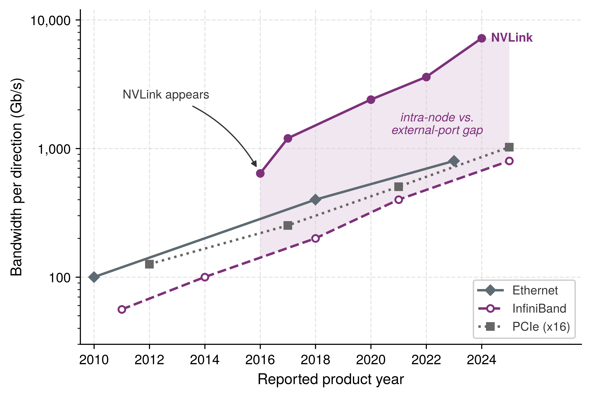
Содержание главы
Содержание
- 3 Сетевой fabric
- 3.1 Синхронизирующий хребет
- 3.2 Как сетевое взаимодействие МЛ переворачивает предположения дата-центров
- 3.3 Уровень 1 Провод и канал
- 3.4 Транспорт уровня 2 и модель производительности
- 3.5 Коммутатор и топология уровня 3
- 3.6 Поведение fabric уровня 4: перегрузка и маршрутизация
- 3.7 Level 5. Проектирование кластера и кейсы
- 3.8 Виртуализация сети
- 3.9 Мониторинг и отладка
- 3.10 Сетевые технологии, сдвигающие потолок
- 3.11 Заблуждения и ловушки
- 3.12 Итоги
3 Сетевой fabric
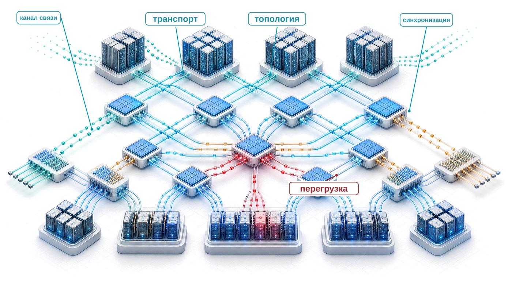
Назначение
Почему сеть, соединяющая ускорители, в масштабе может иметь большее значение, чем сами ускорители?
Один ускоритель способен выполнять триллионы операций в секунду, но распределённое обучение требует, чтобы устройства обменивались результатами, прежде чем зависимая работа сможет продолжиться. Когда пропускная способность сети не поспевает за вычислениями, ускорители простаивают, а добавление новых устройств может увеличить время ожидания вместо сокращения прогона. Возникающие затраты выходят за пределы стоимости сетевого оборудования: дешёвое соединение способно оставить дорогие вычислительные мощности неиспользованными на протяжении всего длительного эксперимента. Интуиции для одного узла недостаточно, поскольку данные, которые раньше перемещались по локальному интерконнекту, теперь должны пересекать кабели, коммутаторы и общие пути. Быстрое соединение между двумя машинами не гарантирует, что та же производительность сохранится, когда весь парк обменивается данными одновременно. Компоновка этих путей определяет, какие группы могут обмениваться данными совместно и где накапливаются конкурирующие передачи. Крупным передачам нужна устойчивая пропускная способность, тогда как частые зависимые обмены могут ограничиваться временем запуска и завершения каждого сообщения. Запоздавший участник может задержать остальных, даже когда большинство каналов выглядит исправным. Поэтому проектирование сети должно следовать коммуникационному шаблону рабочей нагрузки, а валидация должна отражать трафик, который действительно будет выполняться. Решения о размещении, совместном использовании и восстановлении после отказов определяют, станет ли доступная пропускная способность полезным прогрессом или постоянной задержкой. В терминах C³ fabric соединяет вычисления через коммуникацию, тогда как координация определяет, когда парк должен ждать завершения этой коммуникации.
Цели обучения
- Объяснить, как синхронизированный коллективный трафик переворачивает представления дата-центра о потоках, потерях и сверхподписке
- Моделировать стоимость сетевой коммуникации с помощью фреймворка
- и различать режимы, доминируемые пропускной способностью и задержкой - Сравнивать высокопроизводительные транспортные протоколы по задержке, поведению при восстановлении после потерь и эксплуатационной сложности
- Сравнивать сетевые топологии по бисекционной пропускной способности (
), числу переходов и коллективному коммуникационному шаблону рабочей нагрузки - Оценивать механизмы управления перегрузкой и опасности fabric без потерь по их влиянию на хвостовую задержку при распределённом обучении
- Сравнивать механизмы сетевых разделов и изоляции трафика для трафика контрольных точек и мультитенантного трафика
- Диагностировать узкие места сетевой производительности с помощью счётчиков RDMA, телеметрии канального уровня и инструментов тестирования пропускной способности
3.1 Синхронизирующий хребет
Один медленный канал задерживает каждого пира, который его ожидает.
На границе узла пропускная способность NVLink каждого GPU сужается до одного внешнего сетевого порта — дна иерархии пропускной способности, прослеженной в Вычислительная инфраструктура. Насколько дорого обходится это сужение, зависит от того, что задача обучения должна пропустить через порт и как часто. Рассмотрим работающий пример Архетипа A (GPT-4/Llama-3): плотный трансформер класса GPT-3 с 175B параметрами, разбитый на 1,024 GPUs референсного кластера. На каждом шаге обучения необходимо объединить градиентные вклады так, чтобы соответствующие реплики модели применили одно и то же обновление. Эта операция, называемая AllReduce, возвращает объединённый результат каждому участвующему воркеру.
Модель имеет 350 GB градиентных данных при двух байтах на параметр — 16-битные градиенты обучения со смешанной точностью, которые эта глава предполагает на всём протяжении (градиенты FP32 удвоили бы эту цифру). Эта общая по модели цифра не равна тому, что отправляет каждый отдельный GPU. Когда редукция разбивает градиент на все 1,024 рангов (нумерованные воркеры задачи), каждый ранг владеет долей 1/1,024 — несколькими сотнями мегабайт, которые транспортные примеры ниже округляют до одного принятого размера градиентного шарда; тензорное, конвейерное разбиение задачи и параллелизм по данным (Распределённое обучение) задают фактическую полезную нагрузку каждого GPU. Разобранные примеры, переключающиеся на другую модель, точность или состояние полезной нагрузки, явно указывают свои параметры.
Задержанная передача на критическом пути шага может оставить остальные 1023 GPU ожидающими на общей для задачи границе синхронизации. Вклад fabric во время обучения поэтому зависит от того, какие передачи нужны следующему вычислению и какая часть их стоимости остаётся неперекрытой. В этой роли fabric не является вспомогательной инфраструктурой; это синхронизирующий хребет, который решает, обучается ли кластер как одна машина.
Внутри многоуровневой иерархии парка, заданной Рисунок 4, fabric превращает изолированные узлы ускорителей в целостную систему обучения. Ускорители, подача питания, охлаждение, стойки и поды определяют, что каждый узел может вычислить в изоляции; fabric определяет, могут ли узлы действовать согласованно, прежде чем стоимость коммуникации перевесит вычисления. Это пространство проектирования организуется в пятиуровневую модель взаимозависимых уровней, развиваемую в Глава 3.2.1.
В масштабе стоимость коммуникации может доминировать над стоимостью вычислений. Разложение закона парка в Закон парка делает это явным: член неперекрытой коммуникации
↪ Как послойное планирование достигает этого перекрытия и сколько коммуникации оно всё ещё оставляет открытым, развивается в Перекрытие коммуникаций и вычислений.
Коллективная операция — это операция коммуникации, выполняемая группой воркеров. Её название указывает результат, который получает каждый воркер, тогда как алгоритм определяет сообщения, порождающие этот результат. Физический сетевой fabric переносит три повторяющихся шаблона коллективной коммуникации:
- AllReduce: объединяет соответствующие значения от всех участников и возвращает одинаковый результат каждому; синхронное обучение использует сумму с последующей нормализацией для усреднения градиентных вкладов между воркерами.
- AllGather: собирает отдельную часть от каждого участника и возвращает конкатенированную коллекцию каждому участнику, что требуется при восстановлении шардированного тензора параметров.
- AllToAll: позволяет каждому участнику отправить отдельную часть каждому другому участнику — обмен, центральный для параллелизма по экспертам, когда воркеры размещают разные подмножества экспертов и должны маршрутизировать токены к назначенным им адресатам.
Коллективные алгоритмы оркестрируют эти шаблоны, тогда как слой fabric поставляет физические провода и коммутаторы, которые их переносят. Это различие важно, потому что физические свойства fabric (пропускная способность, задержка и топология) определяют, какие шаблоны эффективны, а какие становятся узкими местами.
↪ Полный набор коллективных примитивов с гарантированным каждым из них выходным контрактом развивается в Шесть базовых операций.
Системный взгляд 3.1: Сеть как градиентная шина
В одиночной машине шина памяти перемещает данные между процессором и памятью. В распределённом обучающем кластере сетевой fabric выполняет аналогичную роль градиентной шины, переносящей вклады между воркерами. Когда эти обмены ограничивают прогресс, задача сталкивается с сетевой стеной, отображённой по уровню подов в Рисунок 1. Протоколы, топологии, управление перегрузкой и коллективные расписания определяют, насколько эффективно задача использует доступные пути. У этой шины есть узкий сегмент. По приведённой хронологии продуктов бюджеты внешних портов остаются ниже совокупного бюджета NVLink, начиная с первого показанного поколения (Рисунок 1). Указанные годы смешивают подтверждённые поставки с анонсами и планируемой доступностью; они не устанавливают точную хронологию первых поставок. Насколько задача фактически ощущает этот разрыв, зависит от размеров её сообщений, выделения портов, маршрутизации и конкуренции, поэтому соотношение каналов ограничивает проблему, а не предсказывает время передачи.
↩︎ Доминирование коммуникации в масштабе — сетевая стена — устанавливается в Доминирование коммуникации и сетевая стена.
Референсное оборудование придаёт аналогии с градиентной шиной конкретный масштаб. Один H100 имеет пиковую производительность FP16 для конкретной точности 989 TFLOP/s и пропускную способность памяти 3.35 TB/s. Порты NVLink каждого GPU в совокупности обеспечивают 900 GB/s двунаправленной пропускной способности к пирам внутри узла. Важное сравнение — на один GPU и на одно направление. В референсном узле каждый GPU имеет собственный сетевой адаптер (NIC) с одним портом InfiniBand NDR, поэтому тензор, покидающий узел через этот GPU, падает с 450 GB/s пропускной способности NVLink до 50 GB/s на порту. Этот разрыв в 9× — обрыв границы узла, который уже была отмечена иерархия пропускной способности в Иерархия пропускной способности. Градиентное состояние модели целиком — 350 GB — не проходит целиком через каждый порт 50 GB/s; разбиение и коллективное расписание определяют трафик каждого порта. Превращение этого разрыва в оценку времени шага требует локальных полезных нагрузок рабочей нагрузки и её коммуникационных зависимостей.
↪ Соотношение уровней сетевой иерархии между пропускной способностью внутри узла и между узлами, с опорными значениями NVLink и InfiniBand, раскрывается в Числа, которые должен знать каждый инженер парка.
Какой трафик должен пересекать этот разрыв, зависит от того, как разделена задача. Та же иерархия удерживает тензорный параллелизм с его послойными обменами внутри домена NVLink и позволяет стадиям конвейера и репликам с параллелизмом по данным охватывать несколько узлов — такое сочетание называется 3D-параллелизмом, его расписания рассматриваются в Трёхмерный цикл обучения. У задачи есть ещё один рычаг управления этим трафиком. Каждая реплика с параллелизмом по данным может суммировать градиенты по нескольким микробатчам — малым долям батча — перед обменом (накопление градиентов), уменьшая частоту пересечения границы узла ценой изменения батча и расписания обновлений.
Открытая коммуникация оставляет промежутки между зависимыми фазами вычислений. Два условных расписания обучения на общей оси 230 мс, каждое из которых содержит 100 мс фаз прямого и обратного прохода, делают эту цену видимой (Рисунок 2). Случай 8 GPU внутри узла предполагает AllReduce за 1 мс и проводит 99,5 процента шага в этих фазах вычислений; случай 64 GPU между узлами предполагает AllReduce за 30 мс и проводит в вычислениях 87 процентов. Обе длительности AllReduce — иллюстративные входные данные, выбранные, чтобы показать эффект, а не значения, выведенные из скоростей каналов выше, и указанные проценты — доли расписания, а не измеренная арифметическая утилизация.
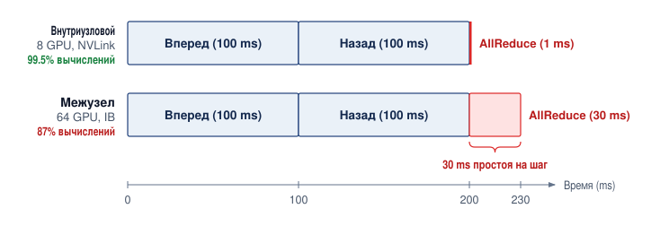
В терминах Fleet Law расширенный красный блок — это та часть
3.2 Как сетевое взаимодействие МЛ переворачивает предположения дата-центров
Обычная облачная сеть, построенная для миллионов независимых веб-запросов, ломается, когда задача обучения выпускает свои градиентные обмены синхронно в конце обратного прохода. Статистическое мультиплексирование опирается на то, что пики трафика не все совпадают, тогда как синхронизированные рабочие требуют одни и те же пути через коммутаторы в один и тот же микросекундный момент. Веб-сервисы также имеют цепочки зависимостей и требования к хвостовым задержкам, но объёмно-синхронная задача обучения привязывает каждого участвующего рабочего к единой общей границе завершения.
Переворачивание ML-сетей в Таблица 1 касается именно этого изменения зависимостей трафика. Синхронные коллективные фазы могут порождать коррелированные всплески и долгоживущие потоки, которые должны завершиться до старта следующих вычислений. Валидация fabric поэтому должна измерять время завершения коллективов при ожидаемой нагрузке; средняя пропускная способность на поток сама по себе не доказывает, что задача уложится в бюджет времени шага.
| Паттерн нагрузки | Традиционное предположение дата-центра | Реальность МЛ |
|---|---|---|
| Паттерн трафика | Независимые запросы могут приходить асинхронно | Коллективные фазы могут выпускать коррелированные всплески |
| Тип потока | Множество коротких передач могут делить доступные пути | Крупные коллективные передачи создают стойкие «слоновьи» потоки |
| Метрика производительности | Завершение и пропускная способность на запрос | Завершение коллективов и открытое время шага |
| Устойчивость к потерям | Задержки восстановления затрагивают отдельные запросы | Восстановление может задержать зависимых рабочих у барьера |
| Перегрузка | Статистическое мультиплексирование опирается на непересекающиеся пики | Общие пути и fan-in могут концентрировать синхронизированный трафик |
Модель объёмно-синхронного параллелизма (BSP)1 — синхронный режим на барьерах шагов, уже встречавшийся в масштабе одного узла (Узел), — делает зависимость из Таблица 1 явной. В примере синхронного обучения все 1,024 GPUs должны завершить требуемый обмен градиентами, прежде чем следующий шаг сможет продолжиться. Задержка передачи в 100 мс добавляет 100 мс к этому шагу, только если она удлиняет критический путь на весь интервал; другие вычисления или коммуникации могут скрыть её часть. У барьера, ожидающего последний требуемый результат, хвостовую задержку — медленный конец распределения времени завершения (обычно указывается как 99-й процентиль, p99) — определяет, когда шаг закончится, поэтому хвост нельзя списать как выброс.
Определение 3.1: Массово-синхронная параллельная модель (BSP)
Объёмно-синхронный параллелизм (BSP) — модель параллельного исполнения, в которой каждый рабочий завершает локальную фазу вычислений, обменивается данными, требуемыми следующей фазой, и затем ожидает на глобальном барьере, прежде чем любой рабочий начнёт следующую фазу; это делает самого медленного участника ограничением темпа для всего кластера.
- Значение: Самое медленное требуемое вычисление или коммуникация определяют, когда супершаг может завершиться. Более быстрые рабочие ожидают у барьера, поэтому локализованная задержка может поглотить время простоя ускорителей по всей участвующей группе.
- Отличие: BSP организует исполнение в синхронизированные супершаги; сама она не предписывает ни алгоритм обучения, ни конкретный паттерн обмена. Обновления с синхронным параллелизмом по данным совпадают с эталоном на одном устройстве только при совместимых глобальных батчах, правилах обновления и числовых предположениях.
- Типичная ошибка: Удаление барьеров само по себе не обеспечивает более быстрого достижения качества. Асинхронное обучение обменивает ожидание на устаревшие обновления, а сравнение сходимости и астрономического времени зависит от нагрузки и расписания обновлений.
↩︎ Плотная синхронная связанность — общий барьер шагов, позволяющий самому медленному рабочему задавать темп парку обучения, — устанавливается в Независимые задачи и синхронные шаги обучения.
Переворачивание потоков усугубляет проблему. Традиционные сети проектируются для справедливости среди миллионов «мышиных потоков»,2 тогда как обучение МЛ доминируется несколькими «слоновьими потоками», соответствующими градиентному AllReduce. Полная модель 175B имеет 350 GB градиентного состояния при предположенной точности, но шардированная задача распределяет это состояние по рабочим. Каждый коллектив работает со своей участвующей группой и локальными данными, а его алгоритм определяет, сколько отправляет каждый рабочий. Стандартная маршрутизация вроде многопутевой маршрутизации по равной стоимости (ECMP), которая хеширует каждый поток на один из нескольких путей равной стоимости, плохо подходит этому паттерну трафика. Статический хеш не может разделить один слоновий поток по всем доступным каналам, и он может случайно отобразить несколько слоновьих потоков на один канал, создавая горячую точку, пока другие каналы простаивают.
Переворачивание потерь завершает картину. TCP был спроектирован для восстановления в ненадёжной сети, и случайная ретрансляция задерживает только свой запрос. В синхронном коллективе потерянный пакет задерживает передачу, которая нужна каждому ожидающему рабочему, а некоторые сетевые карты, реализующие удалённый прямой доступ к памяти (RDMA) — их называют RDMA NIC или RNIC, — восстанавливаются, пересылая всё заново после отсутствующего пакета, а не только потерянный участок (восстановление в стиле Go-Back-N). Поэтому ML-fabric стремятся сделать потери редкими, а восстановление — ограниченным: либо предотвращая переполнение буферов на канальном уровне, либо строя транспорты, быстро восстанавливающиеся после него. Оба подхода развиваются в уровне 2 (Глава 3.4.3).
Коррелированный спрос также делает оверсабскрипцию — выделение меньшей ёмкости аплинка на ярусе коммутаторов, чем ёмкость даунлинков, которую они обслуживают (записывается как отношение даунлинк:аплинк, например 2:1) — решением уровня нагрузки. Fabric со свободной ёмкостью при независимых запросах может стать насыщенной, когда коллектив выпускает трафик через тот же разрез. Проектирование под такой трафик требует прослеживания ограничения от провода через транспорт, топологию и контроль перегрузки до границы синхронизации задачи.
3.2.1 Пятиуровневая модель
Выделение быстрых NIC или покупка неблокирующего (полностью выделенного) яруса коммутаторов сама по себе регулярно не ускоряет обучение: канал 400 Gb/s всё равно остановится, если TCP-копии на хосте голодают на шине PCIe, невыровненная раскладка стоек исчерпывает бюджет медной линии, или статическое ECMP-хеширование складывает два слоновьих потока на один порт спайн-коммутатора верхнего яруса. Проследить, почему коллектив замедляется, требует следования за пакетом через пять связанных слоёв — от сигнализации сериализатора/десериализатора (SerDes) и дальности меди или оптики на уровне 1 до интеграции производственного кластера на уровне 5 (Рисунок 3). Каждый уровень рассматривается в точке, где доминирует его физический или протокольный лимит.
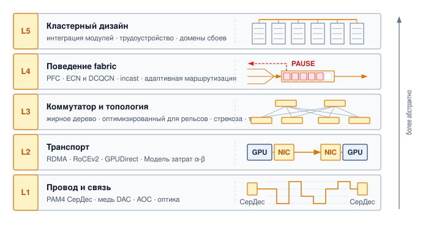
Каждое переворачивание из Таблица 1 восходит к конкретному физическому или протокольному ограничению, а пять уровней указывают, где каждое из них оплачивается:
- Уровень 1: провод и канал (Глава 3.3). Целостность сигнала (PAM4, SerDes), прямое исправление ошибок и дальность меди и оптики накладывают жёсткие ограничения на задержку на хоп и геометрию кластера.
- Уровень 2: транспорт (Глава 3.4). InfiniBand и RDMA over Converged Ethernet (RoCE) предоставляют примитивы RDMA; модель
- количественно описывает компромисс задержка–пропускная способность для разных размеров сообщений. - Уровень 3: коммутатор и топология (Глава 3.5). Fat-tree, rail-optimized конструкции и dragonfly достигают
(бисекционной пропускной способности — ёмкости через самый узкий разрез, делящий кластер пополам) для глобальных коллективов через разные структурные компромиссы. - Уровень 4: поведение fabric (Глава 3.6). Канальное управление потоком и сквозной контроль перегрузки определяют, превращается ли теоретическая пропускная способность в реализованную; адаптивная маршрутизация и поведение incast определяют, переживёт ли эта пропускная способность реальный коллективный трафик (Alizadeh и др. 2010 г.; Zhu и др. 2015 г.; Li и др. 2019 г.; Gangidi и др. 2024 г.).
- Уровень 5: дизайн кластера (Глава 3.7). Производственные суперкомпьютеры вроде NVIDIA SuperPOD и Meta Grand Teton интегрируют эти слои в единую градиентную шину (NVIDIA 2023 г.; Meta Engineering 2024 г.).
Уровни — не перечень сетевых тем; это причинная цепочка, превращающая синхронный ML-трафик в требования к инфраструктуре. Крупные градиентные сообщения сначала нагружают провод и транспорт, затем вынуждают выбор топологии, сохраняющей бисекционную пропускную способность, затем вскрывают поведение перегрузки, которое обычные корпоративные сети могут скрывать, и наконец определяют, ведёт ли себя весь кластер как одна обучающая машина.
Паттерн трафика определяет, какая метрика fabric важна. Глобальная редукция нагружает бисекционную пропускную способность и самый медленный путь; поточечная передача конвейера лежит на критическом пути, поэтому важны её полное время передачи и число хопов; обмен экспертами нагружает разнообразие путей и баланс исходящих; трафик контрольных точек или арендаторов нагружает изоляцию от пути синхронизации (Таблица 2). Оставшиеся уровни развивают каждую из этих пар по очереди.
| Паттерн трафика | Давление на fabric | Метрика, предсказывающая производительность | Основной отклик дизайна |
|---|---|---|---|
| Глобальная редукция | Постоянный трафик через разрез кластера | реализованная бисекционная пропускная способность; время завершения по самому медленному пути | неблокирующая ёмкость, rail-выравнивание, коллективы с учётом топологии |
| Поточечная передача конвейера | Передачи на критическом пути | стартовая задержка плюс размер/пропускная способность; число хопов | короткие пути, прямое размещение, транспортная выгрузка |
| AllToAll экспертов | Множество одновременных пар рабочих | утилизация путей; глубина исходящих очередей; хвостовая задержка | адаптивная маршрутизация, разнообразие путей, сбалансированное размещение экспертов |
| Контрольные точки и мультиарендный трафик | Всплески, конкурирующие с потоками обучения | пропускная способность на класс; длительность паузы; интерференция | классы трафика (виртуальные очереди, QoS), контроль допуска |
Отображение семантики нагрузки на физические ограничения показывает, что нагрузка задаёт требования на каждом уровне, тогда как каждый уровень покоится на предыдущем. Прежде чем топологии более высокого уровня или протоколы маршрутизации смогут организовать трафик, физический уровень должен надёжно доставлять биты между конечными точками без чрезмерного затухания сигнала или недопустимого энергопотребления. Уровень 1 начинается там, где зарождается вся архитектура fabric: у физического провода.
3.3 Уровень 1 Провод и канал
При 400 Gb/s и выше физика передачи сигнала накладывает жёсткие пределы на длину кабеля, энергопотребление и частоту ошибок. Затухание сигнала в меди и хроматическая дисперсия в оптоволокне определяют, насколько далеко ускоритель может находиться от своих коммутаторов, прежде чем связь нарушится. Каждый протокол и топология более высокого уровня в конечном счёте ограничены тем, что может нести физический провод; эти пределы формируют геометрию всего кластера.
3.3.1 Целостность сигнала и PAM4
Достижение скорости 400 Gb/s и более высоких линейных скоростей требует баланса между скоростью передачи сигналов, потерями в канале и ошибками детектирования. Порт достигает такой скорости суммированием нескольких линий (lane) — параллельных последовательных каналов, каждый из которых переносит один сигнал, поэтому NDR-порт со скоростью 400 Gb/s несёт четыре линии по 100 Гбит/с каждая. Символьная скорость линии — это число передаваемых символов в секунду, каждый из которых занимает один временной интервал независимо от того, меняется ли напряжение. Повышение символьной скорости повышает частоты, которые должен пропускать канал, а медь теряет больше сигнала на высоких частотах. Перенос большего числа бит в каждом символе — за счёт использования более двух уровней сигнала — повышает битовую скорость без этого штрафа, и именно PAM4 — та схема, которую используют высокоскоростные линии.
Определение 3.2: Сигнализация PAM4
Сигнализация PAM4 — это схема модуляции, представляющая два бита на символ с помощью четырёх уровней сигнала, удваивая сырую битовую скорость по сравнению с двоичной сигнализацией при той же символьной скорости.
- Значимость: PAM4 увеличивает доступную сырую
при заданной символьной скорости. Уменьшенный интервал между уровнями делает проектирование контроля ошибок частью этого выигрыша. Высокоскоростной Ethernet использует прямую коррекцию ошибок (FEC), включая коды Рида — Соломона RS(544,514), с задержкой обработки, зависящей от проектирования и реализации физического уровня (PHY) (Anslow 2016 г.; Yin и др. 2022 г.). FEC вносит вклад в фиксированный бюджет пути, моделируемый членом в Глава 3.4.4; это один из компонентов наряду с распространением, коммутацией и обработкой в конечных точках. - Отличие: при равных символьной скорости и размахе напряжения двоичная сигнализация NRZ (Non-Return-to-Zero) переносит один бит на символ с большим разделением между уровнями. PAM4 переносит два бита на символ с меньшим интервалом между уровнями; линия должна компенсировать это за счёт проектирования качества сигнала и коррекции ошибок.
- Типичная ошибка: удвоение числа бит на символ не гарантирует двукратной полезной пропускной способности или фиксированного штрафа по задержке. Накладные расходы кодирования, качество канала и выбранная реализация PHY определяют фактически достигнутую производительность.
Цена — запас по шуму. При четырёх уровнях, упакованных в тот же размах напряжения, интервал между соседними уровнями в PAM4 сокращается до одной трети интервала NRZ (Рисунок 4), что делает линию крайне чувствительной к шуму. Поэтому высокоскоростные линии работают вблизи физических пределов надёжного детектирования и требуют прямой коррекции ошибок (FEC) на физическом уровне, обычно с использованием кодов семейства Рида — Соломона RS(544,514) в высокоскоростных реализациях Ethernet (Anslow 2016 г.; Ethernet Alliance 2025 г.).
Обработка FEC — это зависящий от реализации член задержки; материалы операторов IEEE 802.3df считают порядка 100 ns FEC на стороне хоста с кодом RS(544,514) (называемым KP4 в стандарте) и сотни наносекунд сквозной задержки модуля существенными на временных масштабах fabric для ИИ/HPC (Yin и др. 2022 г.). Поскольку каждый коммутатор на пути декодирует и повторно кодирует сигнал, стоимость FEC накапливается с числом коммутаторов, которые проходит пакет.
Длина пути — это его число переходов (hop count), считаемое как число прохождений через коммутаторы или как число межкоммутаторных линий; там, где эти два счёта различаются, каждый пример указывает, какой из них используется. Двухуровневый fabric подключает серверы к листовым коммутаторам, а листы соединяет через магистральные (spine) коммутаторы (Глава 3.5.2), поэтому пакет между листами проходит три коммутатора. При принятых 100–200 ns на коммутатор маршрут «лист–spine–лист» даёт бюджет сценария 300 ns–600 ns односторонней задержки FEC, или 600 ns–1200 ns для кругового пути.
По сравнению с градиентом объёмом 350 GB задачи на 175B несколько сотен наносекунд пренебрежимо малы, потому что массовые передачи определяются пропускной способностью. Затраты же ложатся на небольшие сообщения, ограниченные задержкой, — такие как управляющие передачи, координирующие стадии конвейера, — и на коллективные операции, у которых множество последовательных шагов, и каждый платит эту цену. Эта задержка физического уровня задаёт нижнюю границу фиксированной стартовой задержки fabric, формализованной в Глава 3.4.4 как член
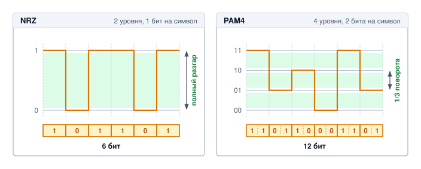
Таким образом, удвоение линейной скорости без удвоения символьной скорости обменивает отношение сигнал/шум (SNR) на пропускную способность, и именно прямая коррекция ошибок позволяет линии работать так близко к пределу канала. Поскольку этот ужесточённый запас оставляет меньше места на затухание в канале, он также сокращает расстояние, которое может пройти пассивный медный кабель, прежде чем линия должна перейти на оптику.
3.3.2 Дальность и среда передачи для меди и оптики
За пределами одного–трёх метров пассивная медь ослабляет высокочастотные сигналы PAM4 сильнее, чем способна восстановить даже FEC, вынуждая любую линию, покидающую стойку, переходить на активные оптические кабели или сменную оптику со скачком стоимости и энергопотребления. Выбор физической среды, следовательно, определяет, насколько далеко линия может дотянуться, прежде чем бюджеты задержки, энергии и кабельной разводки изменят геометрию кластера, а регулярно встречающиеся варианты кабелей и оптики различаются именно по этим атрибутам (Таблица 3).
| Среда | Дальность | Профиль стоимости | Влияние на задержку | Типичное размещение |
|---|---|---|---|---|
| DAC (прямо подключаемая медь) | 1–3 метра, сокращается с ростом скорости линии | Наименьшая стоимость (~$50) и отсутствие энергопотребления оптических модулей | Наименьшая задержка среды; нет оптического преобразования, хотя высокоскоростные линии всё равно платят FEC | Внутри стойки |
| AOC (активный оптический кабель) | 3–30 метров | Более высокая стоимость (~$500) из-за постоянно закреплённых приёмопередатчиков (модулей, преобразующих электрические сигналы в оптические и обратно) | Электрическое/оптическое преобразование добавляет задержку поверх прямой коррекции ошибок (FEC) | Соединения между стойками или в масштабе ряда |
| Сменная оптика | Больше 30 метров | Наивысшая стоимость модулей и энергопотребления, но заменяемые оптические модули и волоконные шнуры | Оптическое преобразование добавляет задержку поверх FEC; дальность расширяет возможности топологии | Ядро сети и соединения в масштабе пода |
Рассматриваемые здесь высокоскоростные медные и оптические пути оба включают FEC, поэтому выбор оптики сам по себе не устраняет накладные расходы на коррекцию ошибок. Диапазоны в Таблица 3 описывают типичные размещения, а не жёсткие границы между средами. Оптические соединения могут расширить компоновку за пределы бюджета пассивного медного канала, а сменная оптика также допускает раздельную замену модулей и волокна. Дальность, фактическая задержка, энергопотребление и ремонтопригодность совместно определяют выбор.
Системный взгляд 3.2: Цена расстояния
В парке машинного обучения расстояние — это деньги. При предположении двух оптических линий на магистральном уровне на ускоритель кластер из 10,000 GPUs требует ~20,000 оптических линий только на магистральном уровне. При $500 за полную линию это составляет $10 million на кабельную инфраструктуру. По энергии считаем один выбранный магистральный сменный модуль на линию при 20 W на модуль, что даёт 400 kW только для этих конечных точек. У каждой оптической линии также есть модуль на противоположном конце; эта промежуточная сумма исключает те модули, электронику коммутаторов и охлаждение, поэтому это не полный энергетический бюджет fabric. Стоимость диктует геометрию кластера: архитекторы упаковывают ускорители настолько плотно, насколько возможно (70–100 kW на стойку), чтобы максимально использовать дешёвую медь и минимизировать дорогую оптику.
3.3.3 SerDes, бюджет линии и энергопотребление
Раскачка тысяч высокоскоростных линий по кластеру сжигает десятки киловатт только на то, чтобы сериализовать биты в провод, — заметная доля собственного теплового бюджета ускорителей. Каждый порт зависит от схемы сериализатор/десериализатор (SerDes), преобразующей параллельные данные из специализированной интегральной схемы (ASIC) коммутатора в последовательный поток, и её энергетическая стоимость накапливается по всем выделенным портам. Для референсного кластера на 1,024 GPU предположим fabric с полным
Бюджет линии распределяет потерю сигнала, которую путь может допустить, удовлетворяя своей цели по ошибкам. Потери считаются в децибелах (dB) — логарифмическом отношении мощностей, где каждые 10 dB означают дальнейшее десятикратное ослабление (3 dB — примерно двукратное), поэтому потери кабелей и разъёмов, соединённых последовательно, складываются напрямую. В этом упрощённом учёте линия имеет допуск 30 dB. Кабель DAC длиной 3-meter, вносящий 18 dB потерь, и разъёмы, вносящие 2 dB, оставляют 10 dB запаса. Более высокие частоты сигнализации увеличивают потери в меди, поэтому сохранение дальности может потребовать дополнительной обработки сигнала, другого кабеля или оптики. Совокупная скорость порта сама по себе не определяет дальность кабеля; значение имеют скорость линии, конструкция канала и активные компоненты. Проект должен удовлетворить и цель по качеству сигнала, и энергетический бюджет, прежде чем транспортный уровень сможет полагаться на линию.
3.4 Транспорт уровня 2 и модель производительности
Закрытие бюджета физического канала доставляет «сырые» биты между соседними портами, однако один AllReduce по сети из 1,024 GPUs GPU всё равно буксует, если хостовое ПО стоит на пути каждой пересылки или если потеря пакета вызывает многомиллисекундную паузу на восстановление. Превращение сырой скорости линии в предсказуемое время шага требует транспортного слоя, который выгружает доставку «память—память» из процессорного тракта и ограничивает издержки восстановления после потерь (контракт выполняется либо через физически fabric без потерь, либо через устойчивую к потерям реконструкцию на конечных узлах), — вместе с моделью производительности, разделяющей фиксированную стартовую задержку на каждое сообщение и устойчивую пропускную способность канала.
3.4.1 RDMA и GPUDirect
Обычный путь через ядровый TCP взимает плату с хоста за каждый перемещённый байт. Обработка прерываний, протокольная работа и копирование полезной нагрузки расходуют циклы CPU и пропускную способность памяти, которые нужны и самому процессу обучения для загрузки и предобработки данных, — причём плата растёт с суммарным I/O, когда множество потоков или сетевых карт нагружают хост на скоростях канала 400 Gb/s. Современные стеки TCP снижают эту плату за счёт сегментационной разгрузки, масштабирования на приёме (receive-side scaling), интерфейсов без копирования и аккуратного размещения с учётом неоднородного доступа к памяти (NUMA), так что один поток не обязан исчерпывать пропускную способность памяти сервера. Но они её не устраняют, и по мере добавления сетевых карт в узлы конкуренцию за ресурсы становится всё труднее планировать предсказуемо.
Определение 3.3: Удалённый прямой доступ к памяти (RDMA)
Удалённый прямой доступ к памяти (RDMA, Remote Direct Memory Access) — сетевая технология, выгружающая обработку транспортного уровня в аппаратуру сетевого интерфейса и позволяющая обращаться к зарегистрированной удалённой памяти без обработка ядра на каждую пересылку полезной нагрузки.
- Значимость: RDMA может сократить сквозную задержку сообщения с десятков микросекунд на пути через ядровый TCP до низких единиц микросекунд на настроенном fabric, уменьшая фиксированную стартовую стоимость, которую каждое сообщение добавляет в коммуникационный член Закона Парка
. - Отличие: в отличие от обычного ядрового TCP-пути, RDMA выгружает транспортную обработку в аппаратуру сетевого адаптера и разрешает доступ из пространства пользователя к зарегистрированной памяти. Экономия ядер CPU и пропускной способности памяти зависит от хоста, сетевого адаптера, тракта ввода-вывода, размера сообщения и конфигурации ПО, а не только от скорости канала.
- Типичная ошибка: RDMA — это модель доступа и выгрузки, а не один алгоритм восстановления после потерь. Надёжные транспорты InfiniBand и RoCE обнаруживают потери и повторяют передачу (InfiniBand Trade Association 2000 г.). Некоторые поколения RNIC используют восстановление в стиле Go-Back-N, отмеченное выше как инверсия потерь, из-за которой потеря пакета становится дорогой (Глава 3.4.3 количественно оценивает эту стоимость), тогда как другие конструкции поддерживают более сильное выборочное восстановление или терпят Ethernet с потерями без механизма пауз канального уровня (priority flow control), на который опирается большинство развёртываний RoCE (Mittal и др. 2018 г.). Требование — надёжное завершение с «хвостом» восстановления, который синхронизированная рабочая нагрузка способна выдержать, а не физически безпотерьная Ethernet-fabric в каждой реализации.
RDMA обходит ядро в тракте данных. До любой пересылки ПО регистрирует буфер памяти, что закрепляет его страницы в физической памяти и сообщает сетевому адаптеру адреса и права доступа, которые ему нужны. Отправляющий адаптер может затем указать на зарегистрированный буфер на удалённой машине, и удалённый адаптер помещает данные туда напрямую, без копирования полезной нагрузки удалённым CPU. Выгружая транспортную логику в адаптер, приложения получают возможность читать и писать в зарегистрированную удалённую память без вмешательства ядра на каждое сообщение. Каждое сообщение минует прерывания, программную протокольную работу и копирования полезной нагрузки, свойственные ядровому пути, — именно так RDMA сокращает фиксированную стартовую стоимость.
Для машинного обучения GPUDirect RDMA,3 путь, который плотные узлы сочетают с одной сетевой картой на GPU (Плотные конструкции узлов), распространяет этот принцип на память ускорителей (NVIDIA 2026 г.b). Внутри отправляющего узла (Рисунок 5) GPUDirect RDMA направляет полезную нагрузку размером
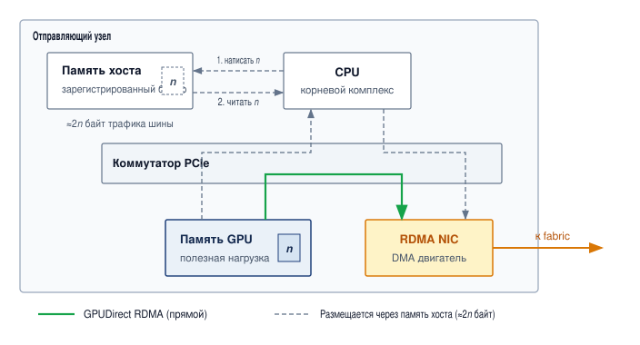
3.4.2 InfiniBand и RoCE
GPU-кластеры обычно выбирают между двумя стеками RDMA-транспорта, и это решение представляет собой компромисс между надёжностью и операционной нагрузкой. В типичных развёртываниях оба стека не дают буферам коммутаторов переполняться при синхронизированных всплесках, но делают это в разных местах. InfiniBand использует управление потоком на основе кредитов. Каждый получатель сообщает отправителю на другом конце канала о своём свободном буферном пространстве в единицах, называемых кредитами, и отправитель передаёт только в то пространство, которое было анонсировано. Буфер, следовательно, не может переполниться; перегрузка проявляется как ожидание отправителями кредитов, а не как отброшенные пакеты. Ethernet проектировался так, чтобы отбрасывать пакеты при заполнении буферов, поэтому развёртывания RoCE, желающие того же поведения, добавляют два механизма. Priority flow control (PFC) позволяет заполняющемуся порту коммутатора отправить кадр PAUSE, останавливающий верхнего соседа для одного класса трафика, а явное уведомление о перегрузке (ECN, explicit congestion notification) помечает пакеты, проходящие через заполняющуюся очередь, чтобы их отправители сбавили скорость до того, как понадобится пауза. InfiniBand, таким образом, встраивает безпотерьность в канальный уровень, тогда как RoCE собирает её из конфигурации коммутаторов и сквозного управления перегрузкой (Таблица 4); Глава 3.6.1 разбирает режимы отказа PFC.
| Стек | Поведение fabric | Операционная нагрузка | Типичное применение |
|---|---|---|---|
| InfiniBand (IB) | Специализированная HPC-коммутируемый fabric (InfiniBand Trade Association 2000 г.) с управлением потоком на основе кредитов, так что безпотерьность нативна на канальном уровне | центральный менеджер подсети вычисляет маршруты, а виртуальные каналы (VL), раздельные пулы буферов и кредитов на одном канале, изолируют трафик | Выделенные обучающие кластеры, где предсказуемая хвостовая задержка важнее гибкости экосистемы Ethernet |
| RoCE (RDMA over Converged Ethernet) | RoCEv2 переносит семантику RDMA, инкапсулируя транспортные заголовки InfiniBand в пакеты UDP/IP | развёртывания на базе PFC подавляют потери с помощью PFC, ECN и политики маршрутизации (Guo и др. 2016 г.; Gangidi и др. 2024 г.); конструкции без PFC вместо этого перекладывают большую нагрузку на сквозное управление перегрузкой и восстановление после потерь (Mittal и др. 2018 г.) | Мультивендорные Ethernet-парки, способные впитать больше настройки управления перегрузкой |
Строка InfiniBand4 отражает протокольное наследие, отдающее приоритет аппаратно управляемой безпотерьности перед совместимостью с Ethernet. Тем не менее оба стека RDMA разделяют один и тот же обход в пространстве пользователя через границу «пользователь — ядро — аппаратура» (Рисунок 6). Обычный путь TCP/IP с копированием слева использует два программных копирования через границы буферов ядра и исполняет протокол в ПО. Стек RDMA справа ведёт единственную янтарную стрелку обхода от библиотеки коллективных коммуникаций (например, NVIDIA Collective Communications Library, NCCL) и verbs API из пространства пользователя прямо к RDMA-адаптеру, оставляя операционную систему вне активного тракта данных. Verbs API — это программный интерфейс, через который ПО отправляет RDMA-запросы работы адаптеру.
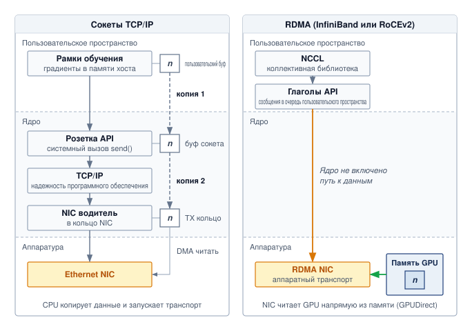
3.4.3 Надёжная доставка и восстановление после потерь
Направляя verbs API из пространства пользователя прямо в аппаратуру (Рисунок 6), архитектура отвязывает вызовы библиотеки коллективов от операционной системы, оставляя транспортной аппаратуре и fabric арбитраж надёжной доставки и потерь пакетов. Надёжные connected-транспорты и в InfiniBand, и в RoCE обнаруживают потери и повторяют передачу (InfiniBand Trade Association 2000 г.); кредиты и PFC существуют для того, чтобы такая повторная передача оставалась редкой (Guo и др. 2016 г.; Gangidi и др. 2024 г.). Безпотерьность, следовательно, — это контракт развёртывания, а не свойство семейства RDMA как таковое. Конструкции, работающие поверх Ethernet с потерями и без PFC, перекладывают больше ответственности на сквозное управление перегрузкой, переупорядочивание пакетов и выборочное восстановление (Mittal и др. 2018 г.).
Поэтому важна гранулярность восстановления. На RNIC с восстановлением в стиле Go-Back-N и без удержания пакетов, пришедших не по порядку, потерянный пакет обесценивает каждый пакет, пришедший после него, и отправитель вынужден повторять передачу с точки пропущенной последовательности. Расплата — всё, что отправитель передал между потерянным пакетом и моментом, когда он узнал о потере. Этот интервал — окно повторной передачи, и оно не превышает произведение скорости линии на задержку обнаружения. Если негативное подтверждение получателя (его сообщение о разрыве) достигает отправителя через один круговой проход 5 μs, отправитель на скорости 50 GB/s успел за это время отправить 250 KB, и всё это придётся отправить заново; потеря на отметке 900 МБ в передаче объёмом 1 ГБ обесценивает это окно, а не уже доставленные 900 МБ. Передача буксует, пока не придёт окно повторной передачи. Когда обнаружение вместо этого ждёт собственного тайм-аута повторной передачи отправителя, буксование растёт вместе с этим тайм-аутом, хотя окно перестаёт расти, как только отправитель достигает лимита на отправленные, но ещё не подтверждённые данные. Повторная передача на скорости линии занимает не более ещё одной задержки обнаружения, потому что окно не превышает произведение скорости линии на эту задержку. Ниже этого лимита более быстрый канал, следовательно, повторяет больше байт на каждую потерю, не сокращая время буксования.
RNIC с выборочным восстановлением повторяет только отсутствующие пакеты, поэтому та же физическая потеря даёт более короткий «хвост» (Mittal и др. 2018 г.). В любом случае буксование охватывает много времён прохождения пакетов по линии, а синхронный коллектив выставляет самое медленное восстановление всем ожидающим исполнителям.
Проектировщики fabric могут сократить этот «хвост», подавляя потери с помощью PFC, используя устойчивый к потерям транспорт с ограниченным восстановлением на конечных узлах или сочетая управление перегрузкой и политику допуска так, чтобы очереди редко переполнялись. Каждый выбор перемещает состояние и режимы отказа между коммутаторами и конечными узлами.
3.4.4 Модель производительности
Даже на безпотерьном RDMA-пути с нулевыми потерями пакетов удвоение скорости канала едва ускоряет передачу управляющих данных конвейера в несколько килобайт, но почти вдвое сокращает передачу градиента в несколько сотен мегабайт. Разделить эти два поведения позволяет модель стоимости, различающая фиксированные накладные расходы на каждое сообщение и скорость передачи на байт. Модель
↪ То же разложение, просуммированное по раундам каждого расписания, развивается для коллективных алгоритмов в Оценка коллективных операций по раундам и чанкам.
Модель выявляет два режима, требующих разных инженерных решений. Когда
↪ Размер сообщения в точке перехода, разделяющий режимы доминирования задержки и доминирования пропускной способности, с разобранным примером для InfiniBand NDR выводится в Режимы, ограниченные задержкой и пропускной способностью.
Для смоделированного пути NDR InfiniBand с
Инженерный расчёт 3.1: Точка перехода альфа-бета
Задача: Проектировщик fabric сравнивает смоделированный путь InfiniBand NDR (1.5 μs, 50 GB/s) со смоделированным путём RoCE поверх более медленного Ethernet (5 μs, 12.5 GB/s). Сравнение намеренно объединяет стек с большей задержкой и более медленный канал, поэтому третий путь — RoCE на линии 400 Gb/s — разделяет эти два эффекта. Для 4 KB управляющего сообщения и 350 MB осколка градиента: какой член
Математика: Применим
- Малое сообщение (4 KB):
- InfiniBand:
- RoCE (100G):
- Результат: При этих принятых параметрах пути NDR-путь в 3.4× быстрее, поскольку его смоделированная
ниже.
- InfiniBand:
- Большое сообщение (350 MB):
- InfiniBand:
7.0 ms - RoCE (100G):
28.01 ms - Результат: При этих принятых параметрах пути NDR-путь в 4× быстрее, поскольку его смоделированная
выше. Этот коэффициент равен отношению двух скоростей линии, поэтому он характеризует более быстрый канал, а не транспорт.
- InfiniBand:
- Одинаковая скорость линии (RoCE на 400 Gb/s, RoCE
): - Малое сообщение: 5.08 μs — по-прежнему в 3.2× больше времени NDR, потому что эти два пути различает только принятая
. - Большое сообщение: 7.0 ms — практически время NDR, потому что при равной
их разделяют лишь несколько микросекунд .
- Малое сообщение: 5.08 μs — по-прежнему в 3.2× больше времени NDR, потому что эти два пути различает только принятая
Системный вывод: Этот сценарий помещает точку перехода
Два размера сообщений из блокнота 3.1 напрямую отображаются на задачу обучения 175B. Для 4 KB управляющего сообщения, уведомляющего стадию конвейера о готовности следующего микробатча (
Во всём диапазоне размеров сообщений каждый путь описывает плоское плато, ограниченное задержкой, которое изгибается в линейный режим, ограниченный пропускной способностью (Рисунок 7). На смоделированном пути NDR колено в 75 KB отмечает, где время передачи превысит стартовую задержку 1.5 μs; путь RoCE 100 Gb/s лежит на более высоком уровне 5 μs и изгибается вблизи 62.5 KB. Точные положения отражают принятые сценарные параметры
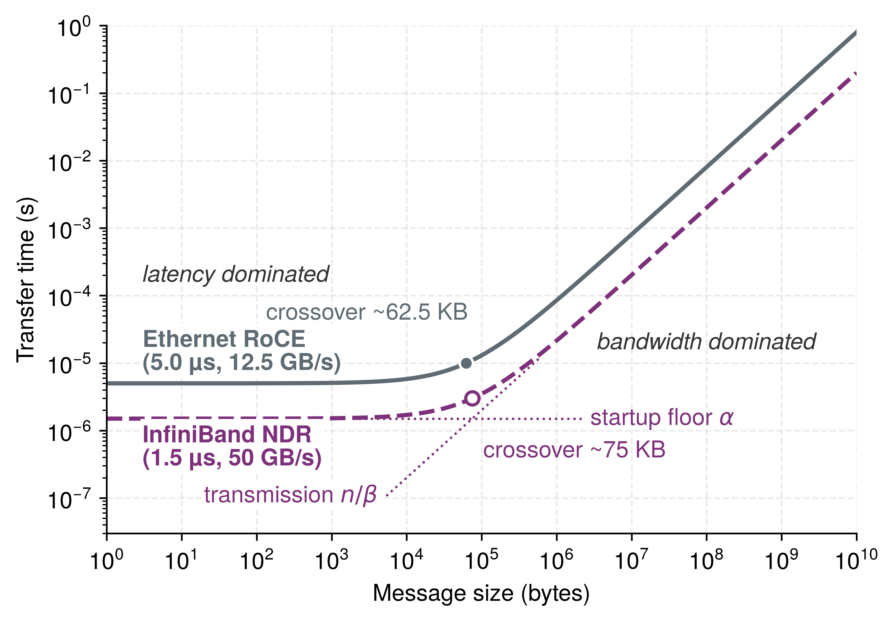
Помимо классификации отдельных передач, та же модель определяет, когда коллективная операция начинает превышать по длительности вычисления. Кольцевой AllReduce — один из распространённых планов: он передаёт фрагменты по логическому циклу участников, сначала в фазе ReduceScatter, оставляющей каждому участнику один фрагмент объединённого результата, затем в фазе AllGather, — без требования, чтобы физические коммутаторы образовывали кольцо. Законы масштабирования, подталкивающие обучение к большему числу параметров (Законы масштабирования ИИ), пропорционально увеличивают градиент, который каждый шаг параллелизма по данным должен сводить. Суммированная по раундам кольца стоимость каждой передачи в терминах
↪ Вывод кольцевого AllReduce и конкурирующие с ним планы разбираются в Кольцевой AllReduce.
Измеренный коллективный вызов демонстрирует оба режима и то, где двухпараметрическая модель требует аккуратности. NVIDIA публикует полный вывод стандартного бенчмарка NCCL AllReduce на одном узле из восьми GPU H100, соединённых NVLink, с перебором размеров сообщений от 8 байт до 16 ГБ (NVIDIA 2026 г.a). Этот запуск не пересекает внешнюю сеть, поэтому он проверяет саму двухпараметрическую форму, свободную от внешних коммутаторных путей и перегрузок fabric. Двухпараметрическую модель можно построить по двум сводным значениям этого перебора — медианному времени малых сообщений как
Бенчмарк умножает эту алгоритмическую пропускную способность на
↪ Сетевая редукция (in-network reduction), при которой коммутаторы, а не GPU объединяют вклады и которую NVLink SHARP приносит на NVLink-коммутаторы узла, развивается в Редукция внутри сети с SHARP.
Между двумя крайностями модель помещает «колено» этого подогнанного коллективного вызова около 5 МБ, что намного выше точки пересечения 75 KB одного пути NDR, но измеренное время превышает прогноз модели до 1.7× для сообщений примерно от 1 МБ до 1 ГБ. В этом среднем диапазоне чанки ещё недостаточно велики, чтобы заполнить все параллельные каналы NVLink и амортизировать накладные расходы протокола на каждый раунд, поэтому доставленная пропускная способность всё ещё выходит на пик. Модель, таким образом, точна на двух концах и оптимистична в середине, и именно в этом среднем диапазоне часто оказываются бакеты градиентов (группы тензоров градиентов, редуцируемые за один вызов) при параллелизме по данным.
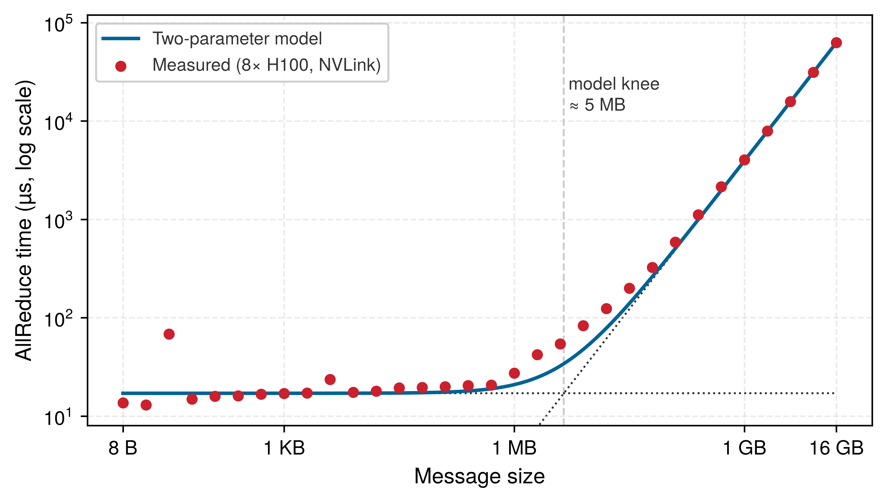
Контрольная точка 3.1: Выбор протокола
Рассмотрите задачу 175B на эталонном кластере из 1,024 GPU. Её обмены градиентами перемещают сообщения в сотни мегабайт, тогда как стадии конвейера координируются через частые управляющие сообщения в несколько килобайт.
Модель
3.5 Коммутатор и топология уровня 3
Кластер может иметь тысячи быстрых каналов на краю и всё же голодать по своим операциям AllReduce, если пропускная способность в поперечном сечении в самой узкой точке иерархии коммутации недостаточна. Физическое расположение коммутаторов определяет, ограничивает ли это сечение коллективную коммуникацию или поддерживает полноценный обмен на полной линейной скорости между всеми участвующими исполнителями. Эту возможность определяют два свойства: бисекционная пропускная способность
Определение 3.4: Бисекционная пропускная способность
Бисекционная пропускная способность — метрика топологии сети, определяемая как минимальная суммарная ёмкость каналов, пересекающих любое разбиение, которое делит кластер на две равные половины; она представляет наихудший потолок пропускной способности для трафика, который должен пересекать это разбиение, включая глобальные коллективы.
- Значимость: бисекционная пропускная способность
напрямую задаёт потолок пропускной способности масштаба кластера для глобальной синхронизации. Fat-tree из 1,024 GPU со связями 400 Gb/s при подписке 1:1 обеспечивает в каждом направлении; перегруженный spine 4:1 снижает это значение до 6.4 TB/s, увеличивая нижнюю границу времени передачи для фиксированного полезного груза, пересекающего разрез, в 4×. Фактическое замедление AllReduce зависит от размещения рангов, расписания коллективного вызова и того, какие каналы насыщаются. - Отличие: в отличие от агрегированной пропускной способности (суммы скоростей всех краевых каналов, которая может быть высокой даже в плохо связанной топологии),
измеряет глобальную связность. Топология «звезда» с 1 000 краевых каналов, сходящихся на одном центральном коммутаторе, имеет высокую агрегированную пропускную способность, но , ограниченную ёмкостью шины этого коммутатора. - Типичная ошибка: распространённое заблуждение состоит в том, что добавление большего числа leaf-коммутаторов всегда увеличивает
. В трёхуровневом fat-tree перегрузка уровня spine (дающая каждому spine-коммутатору меньше аплинков к ядру, чем даунлинков к его листьям) снижает ниже суммарной ёмкости краевых каналов независимо от того, сколько leaf-коммутаторов присутствует.
Обучение моделей включает глобальные коллективы и фазы AllToAll, способные гонять трафик через разбиения топологии, что делает полную
Бисекционная пропускная способность измеряет ёмкость разреза; неблокирующий fabric предоставляет пути, способные поддерживать одновременные пары «вход-выход» на полной линейной скорости при подходящей маршрутизации. Полная
↪ Более медленный разрез удлиняет шаг обучения только тогда, когда дополнительное время передачи не может скрыться за вычислениями. Диагностика «коммуникация-вычисления», проверяющая это, развивается в Compute $\cap$ communication.
Определение 3.5: Неблокирующий fabric
Неблокирующий fabric — сеть с достаточной внутренней ёмкостью путей, чтобы при подходящем назначении маршрутизации поддерживать любую перестановку пар портов «вход-выход» одновременно на полной линейной скорости.
- Значимость: в парках машин для машинного обучения неблокирующий fabric может поддерживать трафик-перестановку на полной скорости при подходящей маршрутизации, сохраняя доступный член
для глобальных коллективов. Перегруженный spine 2:1, распространённый компромисс в центрах обработки данных, уменьшает эффективную вдвое, удваивая время коммуникации, когда этот разрез является насыщенным узким местом, и соответственно снижая масштабирующую эффективность . В сценарной рабочей нагрузке, предположительно тратящей 30 percent каждого шага на коммуникацию, удвоение этой доли при фиксированной длине вычислительной доли удлиняет каждый шаг, а более длинный шаг стоит примерно 23.1 percent общей пропускной способности кластера. Определение бисекционной пропускной способности выше и ноутбук 3.2 используют вместо этого 4:1 — оптимизированный по стоимости spine; ноутбук выписывает формулу пропускной способности, стоящую за обоими результатами. - Отличие: гарантия касается перестановки, в которой каждый вход и выход принадлежит одной паре. Она не обещает полной линейной скорости от каждого отправителя к каждому получателю одновременно и не делает произвольное назначение маршрутизации свободным от конфликтов.
- Типичная ошибка: частое заблуждение — что «неблокирующий» означает нулевую перегрузку. Перегрузка на конечных точках (incast) всё же может возникнуть, если несколько отправителей одновременно нацелены на один и тот же порт получателя, независимо от того, сколько внутренней ёмкости fabric доступно.
Fat-tree строятся на принципах неблокирующих сетей в стиле Clos, чтобы обеспечивать полную
3.5.1 Top-of-rack (ToR) и домен отказа
Рассмотрите стойку с четырьмя узлами по восемь GPU в каждом: если все 32 ускорителя подключены к одному коммутатору top-of-rack (ToR) без альтернативного пути, потеря этого коммутатора разом отключает всю стойку от задачи. Поскольку ToR агрегирует каждый серверный канал в стойке, он становится общим доменом отказа — уровнем физической иерархии, определённым в Здоровье и надёжность узла, — и восстановление тогда зависит от доступных путей, сохранившегося состояния и политики восстановления задачи. Такая разводка «один коммутатор на стойку» — более простой базовый вариант, используемый здесь для обучения понятиям радикса и доменов отказа. Сам эталонный кластер подключает каждый GPU к rail-коммутатору — компоновка, развиваемая в Глава 3.5.3. Эта компоновка меняет домен отказа: потеря одного rail-коммутатора отсекает один GPU в каждом из многих узлов, а не все GPU одной стойки.
Та же граница определяет размещение состояния. Чтобы пережить отказ на уровне стойки, задаче требуется восстановимое состояние за пределами этой стойки и способ возобновить работу на доступных мощностях. Следовательно, планирование с учётом топологии должно учитывать как быстрые пути передачи данных, так и отказы, общие для нескольких близко расположенных ресурсов.
↪ Вложенные домены отказа и то, почему избыточное состояние должно охватывать их, чтобы пережить коррелированный отказ стойки или ToR, рассматриваются в Коррелированные отказы.
Радикс коммутатора radix,5 — число его портов — определяет, сколько конечных точек и аплинков он может подключить. В референсной конфигурации коммутатор на 64 портов назначает 32 портов серверам — по одному на каждую из 32 GPU — и 32 портов уровню spine. При равной скорости портов соотношение 1:1 исключает оверсабскрипшн (превышение подписки) на этой границе; фактическая пропускная способность по-прежнему зависит от коммутации и путей за его пределами. Кластер на 1,024 GPU требует, таким образом, примерно 32 таких коммутаторов, хотя физическое число стоек зависит также от плотности узлов и схемы каблирования.
3.5.2 Сети с топологией толстого дерева (Клоза)
ToR обеспечивает неблокирующую пропускную способность внутри одной стойки, но чтобы соединить 32 коммутаторов первого уровня референсного кластера в кластер, сохраняющий полную
Определение 3.6: Топология толстого дерева
Fat-tree — иерархическая топология сети МЛ-кластера, в которой число параллельных путей (а значит, и суммарная пропускная способность поперечного сечения) возрастает на каждом ярусе коммутаторов по направлению к spine, обеспечивая полную
- Значимость: Fat-tree арности
, построенный из коммутаторов с радиксом , поддерживает хостов в автономной двухъярусной конфигурации и хостов в трёхъярусной конфигурации с полной . При коммутаторах на 64 портов автономный двухъярусный fabric поддерживает 2,048 GPU, а трёхъярусная — 65,536 хостов. Это граница ёмкости при подходящей маршрутизации и допустимом трафике; она не устраняет конкуренцию на конечных точках и не гарантирует, что конкретная реализация AllReduce достигнет линейной скорости. - Отличие: В отличие от обычного дерева (где пропускная способность в корне — единое узкое место, разделяемое всеми листьями), fat-tree заменяет корень несколькими коммутаторами spine, чья суммарная ёмкость аплинков соответствует суммарной пропускной способности граней, устраняя узкое место.
- Типичная ошибка: Распространённое заблуждение — что fat-tree гарантирует нулевую стоимость сети. Требуется
коммутаторов и плотное каблирование, так что неблокирующий трёхъярусный fat-tree в масштабе 4,000 GPU требует сотен коммутаторов и более десяти тысяч линий ещё до покупки одного ускорителя.
Трёхъярусный fabric с радиксом 4 (
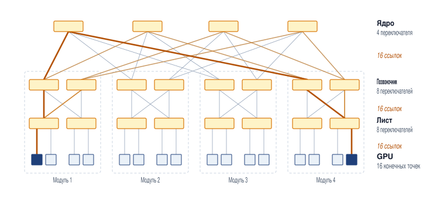
Fat-tree6 — распространённый выбор по умолчанию для МЛ-кластеров, потому что неблокирующая архитектура может обеспечить полную
Fat-tree, построенный из коммутаторов с радиксом
Развёртывание на 4,096 GPU не может соединить две полностью заполненные автономные fabric на 2,048 хостов на уровне их spine, потому что каждый порт spine уже занят соединением с листом. Вместо этого оно строится как four пода на 1,024 хостов трёхъярусной архитектуры, соединённые через ярус ядра. Конкретная оценка бисекции (ноутбук 3.2) показывает, как быстро оверсабскрипшн на границе spine или ядра превращается в задержку синхронизации.
Инженерный расчёт 3.2: Бисекционная пропускная способность: цена оверсабскрипшна
Задача: Проектировщик кластера выбирает между «неблокирующей» (1:1) fat-tree и «оптимизированной по стоимости» spine с оверсабскрипшном (4:1) для кластера на 1024 GPUs стоимостью $300M. Это отдельный экономический сценарий, а не постоянная задача 175B: каждая GPU вносит полезную нагрузку градиента 5 GB, и предполагается, что рабочая нагрузка тратит
Математика: Бисекционная пропускная способность (
- Неблокирующая (1:1):
512 50 GB/s 25,600 GB/s в каждом направлении. - Время: 5,115 GB / 25,600 GB/s
0.200 s.
- Время: 5,115 GB / 25,600 GB/s
- С оверсабскрипшном (4:1):
25,600 GB/s, делённая на 4 = 6,400 GB/s в каждом направлении. - Время: 5,115 GB / 6,400 GB/s
0.799 s.
- Время: 5,115 GB / 6,400 GB/s
- Пропускная способность: Если доля коммуникации растягивается в число раз, равное коэффициенту замедления
, а вычисления остаются неизменными, то — потеря около 47.4 percent пропускной способности кластера. - Стоимость: Эта потеря, умноженная на капитальную стоимость $300M, составляет около $142.1M.
Системный вывод: Для такого насыщающего разрез размещения экономия на spine-коммутаторах создаёт узкое место с замедлением 4× для глобальной синхронизации, и на кластере за $300M это узкое место простаивает около $142.1M вычислений. Та же формула даёт потерю 23.1 percent у spine 2:1 в определении неблокирующей сети. Это эквивалентная по ёмкости стоимость при заданных предположениях о рабочей нагрузке, а не прямая потеря оборудования. Оверсабскрипшн нужно оценивать относительно коллективного трафика, реально пересекающего ограниченный разрез.
⇄ Сопоставление: пример синхронизации GPT-3 в Граница энергетического учёта предполагает чистый параллелизм по данным без перекрытия, поэтому его доля видимой коммуникации значительно превышает долю, принятую здесь.
Таким образом, коэффициент подписки на каждом ярусе определяет, способна ли fat-tree поддерживать глобальные коллективные операции, а число ярусов — до какого масштаба она может вырасти. Масштабирование за предел двухъярусной архитектуры на 2,048 хостов требует трёхъярусной архитектуры с коммутаторами ядра, что позволяет fabric достичь 65,536 хостов, но добавленный масштаб несёт с собой и стоимость, и задержку. Каждый из
Контрольная точка 3.2: Топологии fat-tree
Эти вопросы проверяют, ясны ли компромиссы иерархического коммутационного fabric:
3.5.3 Rail-оптимизированная топология
Когда тензорно-параллельные группы остаются внутри высокоскоростного домена NVSwitch каждого узла, параллелизм по данным обменивается градиентами только между GPU, которые держат один и тот же шар модели в одной и той же локальной позиции слота на разных узлах, — однако стандартный fat-tree подключает все восемь GPU узла к общему ToR-коммутатору. Rail-оптимизированная топология вместо этого подключает внешние сетевые порты по локальной позиции слота (Рисунок 10): GPU 0 каждого узла подключается к коммутатору Rail 0, GPU 1 — к Rail 1 и так далее по всему кластеру.
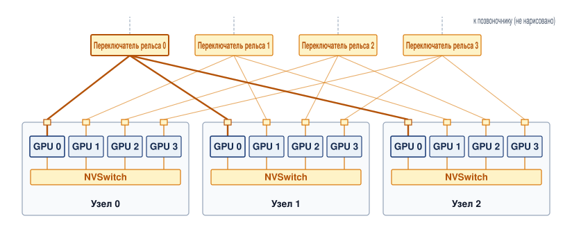
Такая разводка, выровненная по слотам, использует стратифицированный трафик, который порождает 3D-параллелизм. Поскольку каждый узел содержит одну полную тензорно-параллельную группу с одним шаром на каждом GPU, каждая реплика параллелизма по данным назначает соответствующий шар модели той же локальной позиции слота GPU (где номер слота — это локальный ранг внутри узла, отличный от глобального ранга воркера в распределённой задаче). Реплики — идентичные копии одного размещения, поэтому узлы, держащие одну и ту же стадию конвейера, держат один и тот же срез модели в данном слоте. Во время AllReduce параллелизма по данным GPU 0 одного узла синхронизирует градиенты своего шара с GPU 0 других узлов, но редко взаимодействует с GPU 1. Изоляция каждого локального ранга на собственную rail-fabric коммутаторов убирает одно-ранговый трафик с общих стойечных коммутаторов и, когда rail умещается на одном коммутаторе, сокращает путь между соответствующими GPU. Изоляция сохраняется при любом построении rail, а вот более короткий путь — нет.
Инженерный расчёт 3.3: Дивиденд rail-оптимизации
Задача: команда синхронизирует градиенты параллелизма по данным по-рангово между 128 nodes. В стандартном fat-tree каждое сообщение между GPU одного ранга проходит свой листовой коммутатор источника, спайн-коммутатор и листовой коммутатор назначения (3 проходов через коммутаторы). В rail-оптимизированной сети, построенной из rail-коммутаторов с хотя бы одним портом на узел, все соответствующие GPU находятся на одном rail-коммутаторе (один проход). На референсном кластере это требует rail-коммутаторов с большим числом портов, чем у использованного до сих пор коммутатора с radix 64, поэтому оценка описывает дизайн с более высоким radix. Какой дивиденд по задержке даёт rail-дизайн, когда rail умещается на одном коммутаторе?
Математика: Эта оценка учитывает только вклад проходов через коммутаторы в задержку коммуникации (
- Стандартная задержка: 3 проходов
0.6 μs = 1.8 μs. - Rail-оптимизированная: 1 проход
0.6 μs = 0.6 μs. - Результат: задержка ниже в 3×.
Системный вывод: для синхронного AllReduce параллелизма по данным это сокращение в 3× относится к моделируемому вкладу задержки коммутации, а не ко полному времени коллективной операции. Его влияние на эффективность масштабирования (
Экономия хопов — лишь часть аргументов в пользу rail. Парк больших языковых моделей перенимает этот шаблон, потому что он соответствует тому, как план параллелизма делит трафик.
Опорный пример 3.1: Архетип A (GPT-4/Llama-3): Rail-оптимизированный парк
Использование 3D-параллелизма в Архетипе A порождает два различных шаблона трафика, тянущих в противоположные стороны: (1) крупное, требовательное к пропускной способности усреднение градиентов для параллелизма по данным и (2) высокочастотные, чувствительные к задержке обмены активациями для тензорного параллелизма. Удержание тензорного параллелизма внутри домена NVLink каждого узла оставляет градиентный трафик параллелизма по данным на fabric, и rail даёт каждой одно-ранговой группе параллелизма по данным собственную коммутационную сеть. Rail может обеспечить единственный хоп через коммутатор между узлами, когда число его конечных точек умещается в доступные порты коммутатора. Большие rail требуют дополнительных ступеней коммутации, поэтому одно лишь выравнивание по rail не гарантирует одно-хоповую коммуникацию. В любом случае урок для Архетипа A таков: то, как fabric подключена под план параллелизма, важно не меньше, чем то, сколько ускорителей она соединяет.
Для кластера из 1,024 GPUs на 128 nodes это создаёт восемь параллельных сетей по 128 GPUs GPU в каждой, требуя хотя бы один порт коммутатора на каждую конечную точку в каждом rail. Реализация на одном коммутаторе, следовательно, требует radix не меньше числа конечных точек rail; ранее использованный коммутатор с radix 64 не может реализовать такой rail в одиночку, почему блокнот 3.3 и предполагал rail-коммутаторы с более высоким radix. Если же строить rail из коммутаторов с radix 64, каждый rail становится маленькой двухъярусным fabric, сохраняющей выравнивание по рангам, но добавляющей хопы. Для требовательных к пропускной способности обменов градиентами параллелизма по данным бóльшая выгода — изоляция: каждый rail несёт только трафик своего ранга, поэтому восемь rail-сетей работают одновременно, не конкурируя за общую ёмкость спайнов. Когда rail умещается на одном коммутаторе, более короткий путь также срезает стартовую стоимость, которую кольцо платит на каждом круге.
Та же изоляция создаёт острый компромисс, потому что трафик, который должен достигать GPU других рангов, требует моста через rail-ы. К такому трафику относится экспертная маршрутизация в модели смеси экспертов (MoE), которая отправляет каждый токен нескольким выбранным для него экспертным подсетям, и передачи между стадиями конвейера, не совпадающие с разводкой rail. Поэтому крупные кластеры часто применяют гибридный подход: rail-оптимизированные листья для одно-рангового трафика параллелизма по данным при мостах между rail-ами в виде полного fat-tree спайна для поддержки меж-ранговых шаблонов коммуникации.
↪ Экспертный параллелизм, при котором каждый ранг хостит своё подмножество экспертов, а токены доставляются к ним через AllToAll, рассматривается в Экспертный параллелизм (mixture of experts).
Контрольная точка 3.3: Rail-оптимизированные сети
Эти вопросы проверяют, ясны ли компромиссы проектирования сети под конкретную рабочую нагрузку:
3.5.4 Dragonfly и тор: альтернативы
При десятках тысяч конечных точек неблокирующий трёхъярусный fat-tree вынуждает вводить третий слой коммутаторов ядра и десятки тысяч длинных оптических кабелей в бюджет, загоняя капитальные расходы на сеть в десятки или сотни миллионов долларов. Две альтернативные топологии атакуют эту стену стоимости с противоположных направлений: сужение глобального яруса коммутаторов или полный отказ от внешних коммутаторов fabric.
Топология dragonfly7 организует маршрутизаторы с высоким radix (название коммутаторов в литературе о dragonfly) в полностью связанные группы, соединённые глобальными оптическими линками. В каждой группе
Топология тор соединяет каждый узел напрямую с его соседями в многомерной решётке — чаще всего это 3D-тор, где каждый узел связан с шестью смежными соседями (вверх/вниз, влево/вправо, вперёд/назад). Дизайн даёт полную локальную пропускную способность при минимальном коммутационном железе, потому что каждый сосед находится в одном хопе. Однако глобальная коммуникация требует пересечения диаметра решётки (
Компромисс становится конкретным для развёртывания на 4,096 оконечных узлов, которого трёхуровневый fat-tree достигает с four подами. Если те же оконечные узлы организовать в торус
Имеет ли значение этот разрыв, зависит от трафика. Ring AllReduce, запланированный вдоль каждого измерения торуса, перемещает данные только между соседями и объединяет вклады до их пересылки, поэтому он почти не нагружает узкий разрез. Напротив, AllToAll в MoE или обмен эмбеддингами между сегментами таблиц рекомендательной модели отправляет значительную долю трафика между удалёнными оконечными узлами и направляет его прямо в разрез; точное давление определяется размещением и размерами сообщений. Следовательно, именно расписание коллективных операций и матрица трафика определяют, ограничит ли меньшая поперечная пропускная способность торуса время завершения.
↪ Расписания AllToAll и их стоимость в масштабе, где каждый ранг отправляет отдельную долю каждому другому рангу, рассматриваются в Обмены AllToAll в масштабе.
В масштабе эталонного кластера на 1,024 GPU четыре семейства топологий различаются по пропускной способности разреза от 25.6 TB/s в неблокирующем fat-tree до 6.4 TB/s в трёхмерном торусе, при этом принятая стоимость интерконнекта на Гб/с бисекционной пропускной способности составляет от $1.5/Гб/с для торуса без коммутаторов до $4/Гб/с для dragonfly с суженными связями (Рисунок 11). Самая дешёвая пропускная способность оказывается и наименьшей — именно этот компромисс оценивает каждое решение о топологии. Заданная здесь стоимость в расчёте на Гб/с у dragonfly наиболее высока, потому что его выигрыш достигается за счёт замены длинных оптических трасс и ступеней коммутаторов в крупном масштабе, что Kim и др. (2008 г.) описывает для систем не менее чем с 16 000 оконечных терминалов; при 1,024 GPU таких трасс для замены почти нет. Значение 12.8 TB/s для rail-топологии относится только к трафику между рейками, поскольку трафик внутри одного ранга остаётся на своей рейке. Радикс, число оконечных узлов, скорость связи, механизмы маршрутизации и цены оборудования — всё это сдвигает данные компромиссы; само по себе семейство топологий не определяет ни сырую поперечную пропускную способность, ни итоговую стоимость.
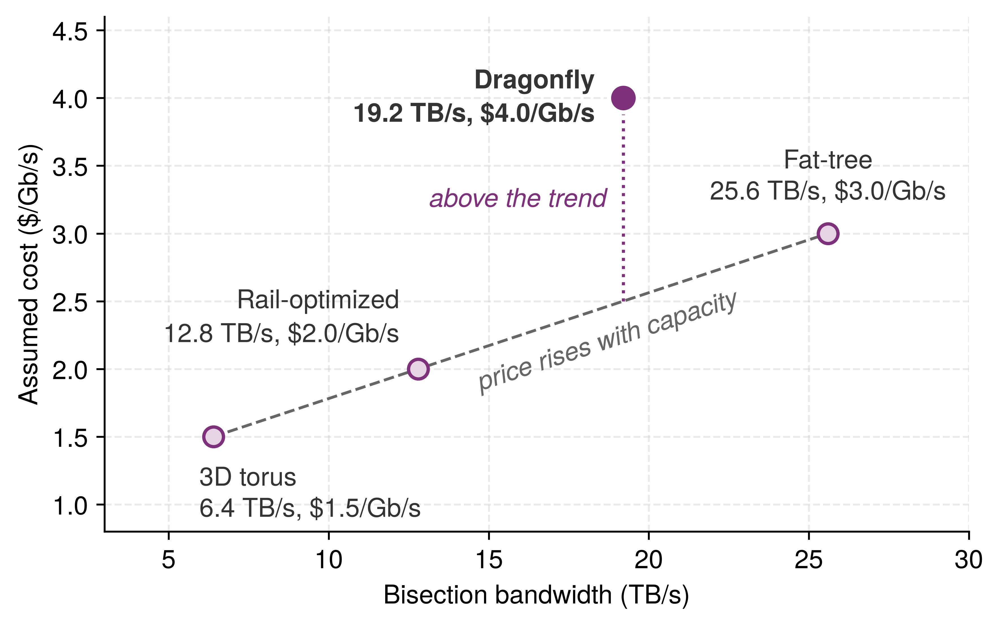
3.5.5 Оптическая коммутация каналов и реконфигурируемая топология
Всякая топология, сравнивавшаяся в Рисунок 11, фиксируется в момент прокладки кабелей в серверной, привязывая кластер к единственному физическому графу независимо от того, какая рабочая нагрузка на нём выполняется. Статически проложенная иерархия Clos (Глава 3.5.2) фиксирует коэффициент сверхподписки и рисунок бисекции независимо от того, преобладает ли в активной задаче конвейер, параллелизм по данным или маршрутизация экспертов AllToAll. Статически проложенный торус (Глава 3.5.4) столь же негибок: он подходит кольцам с порядком по измерениям, но создает заторы под трафиком MoE AllToAll и не может перепрошить свои связи под задачу.
Электрическая коммутация этих многоступенчатых fabric добавляет также повторяющиеся затраты энергии на каждом переходе. Каждый электрический пакетный коммутатор анализирует заголовки и выбирает исходящую связь только после оптико-электрического преобразования (OEO): входящие фотоны попадают на фотодиод, высокоскоростные схемы SerDes десериализуют электрический сигнал, ASIC коммутаторов буферизуют и маршрутизируют пакеты через кроссбары, а выходные SerDes возбуждают лазеры для повторной передачи света по оптическому волокну. При скоростях портов 800 Гб/с и 1,6 Тб/с электроника SerDes и трансиверов потребляет значительную энергию (Глава 3.3.3), и каждая дополнительная ступень коммутации повторяет эти затраты преобразования для каждого бита, проходящего через неё. Изменение физических соединений между группами узлов «в свете» — на время выделения под рабочую нагрузку, а не от пакета к пакету — устраняет и статическую проводку, и повсеместное OEO-преобразование.
Определение 3.7: Оптическая коммутация каналов
Оптическая коммутация каналов (Optical Circuit Switching, OCS) — архитектура физической сети, которая маршрутизирует оптические сигналы напрямую с помощью массивов зеркал на микроэлектромеханических системах (MEMS) без оптико-электрического преобразования (OEO), обеспечивая динамическую программно-определяемую реконфигурацию топологии и высокую энергоэффективность в масштабе дата-центра.
- Значимость: Оптический канал обходит поэтапную электронную обработку на пути коммутации. Полная система всё же потребляет энергию для приводов, управления и трансиверов. Совместимость с разными скоростями линии зависит от оптических потерь, длин волн и бюджетов оконечных узлов, поэтому прозрачность к протоколам не означает неограниченных обновлений.
- Отличие: В отличие от электрических пакетных коммутаторов (которые анализируют заголовки, буферизуют пакеты в SRAM и принимают решения о маршруте за наносекунды на каждый пакет), OCS устанавливает полустатические физические оптические каналы с задержкой коммутации в миллисекунды (
– мс), что делает его подходящим для реконфигурации уровня топологии, а не для динамической маршрутизации пакетов. - Типичная ошибка: Полагать, что OCS полностью заменяет пакетную коммутацию. OCS работает с гранулярностью канала: он конфигурирует топологии масштаба кластера (такие как трёхмерные торы или под-кластеры под конкретную задачу) и обходит аппаратные отказы, тогда как пакетная коммутация или нативные для ускорителей интерконнекты обрабатывают мелкозернистую маршрутизацию сообщений внутри шага.
Суперкомпьютер Google TPU v4 (Jouppi и др. 2023 г.) применял оптическую коммутацию каналов в производстве. Вместо того чтобы соединять 4 096 чипов жёстким электрическим fat-tree, система группирует ускорители в кубы узлов
Оптический слой решает две задачи: адаптацию топологии к рабочей нагрузке и восстановление после отказов. Для адаптации физический интерконнект может быть перенастроен под коммуникационную структуру выполняемой модели. Обучение с 1D-конвейерным параллелизмом, где стадии образуют линию, может вытянуть свой срез вдоль одной длинной оси, чтобы упорядочить передачу между стадиями. Наоборот, разбиение 2D- или 3D-тензорного параллелизма, распределяющее каждый тензор по сетке чипов, может сконфигурировать компактный кубический трёхмерный торус, минимизирующий среднее число переходов, а нагрузка MoE — максимизировать бисекционную пропускную способность между конкретными группами экспертов.
Оптическая коммутация поддерживает и изоляцию отказов — изменение соединений в обход недоступного оборудования там, где позволяет резервная связность. Эта возможность важна, потому что в статически проложенном торусе единственный отказавший канал или узел может разорвать кольцо вдоль целого измерения и ухудшить работу каждой задачи, которая его охватывает. При оптической коммутации каналов зеркала можно перенаправить в обход отказавшего куба или волокна и состыковать исправные кубы в полный, но меньший срез торуса без ручной перепрокладки кабелей. Менеджер fabric должен сначала обнаружить отказ, выбрать допустимое размещение и установить новые каналы, поэтому время коммутации каналов — лишь одна часть восстановления; обучающей задаче может также потребоваться восстановить группы процессов и состояние, прежде чем вычисления возобновятся, так что одна лишь задержка оптической реконфигурации не определяет время восстановления.
Компромисс — это задержка коммутации. Поскольку зеркала MEMS физически поворачиваются, чтобы направлять коллимированные световые пучки, реконфигурация происходит на механической временной шкале, гораздо более длинной, чем пересылка пакетов в уже установленном электрическом пути. Установка канала меняет связность, а пересылка пакетов использует уже существующую связность. Следовательно, OCS поднимает энергетический и протокольный потолок слоя коммутации, оставляя задержку реконфигурации ограничивающим фактором, поэтому он применяется для размещения топологии на уровне задач и изоляции отказов, а не для динамической маршрутизации отдельных сообщений. В этих пределах OCS превращает выбор топологии из решения, зафиксированного при прокладке fabric, в решение, принимаемое для каждой задачи.
Каждое сравнение топологий до сих пор рассматривало один шаблон трафика за раз. На практике кластеры обслуживают несколько рабочих нагрузок с разными шаблонами обмена, и выбор топологии должен балансировать их конкурирующие требования.
Контрольная точка 3.4: Выбор топологии под вашу рабочую нагрузку
Выбор сетевой топологии определяет верхнюю границу эффективности обучения. Разогейтесь, сопоставив каждый шаблон одиночной нагрузки с её идеальной топологией, затем спроектируйте fabric, которая должна обслуживать несколько нагрузок одновременно.
Выбор для одиночной нагрузки
Проектирование для смешанного кластера
Вы проектируете сеть для нового МЛ-кластера, который будет выполнять две основные рабочие нагрузки: (1) обучение языковой модели с 175 млрд параметров с использованием 3D-параллелизма (тензорный, конвейерный и параллелизм по данным) и (2) обслуживание модели «смесь экспертов», сильно зависящей от обмена AllToAll для маршрутизации токенов к нужным экспертам.
Топология обеспечивает структурную ёмкость для обмена данными в кластере из 1,024 GPUs, но одна лишь структура не гарантирует производительности. Когда 1,024 GPUs синхронизируют вклады в градиентное состояние модели 350 GB, теоретическая ёмкость сталкивается с реальностью поведения fabric: управление перегрузкой и динамика маршрутизации определяют, будет ли этот трафик течь гладко или застрянет в пробке под жёсткой синхронизацией модели BSP.
3.6 Поведение fabric уровня 4: перегрузка и маршрутизация
Коллективная операция может завершиться с опозданием даже тогда, когда топология обеспечивает полную
Хвостовая задержка p99, введённая вместе с барьером BSP, помогает выявить задержки, скрытые средним значением, но конкретный барьер ждёт последнего требуемого участника, а не перцентиля. Поэтому для оценки fabric нужны как распределения времени передачи, так и времена завершения коллективных операций, которые они дают под нагрузкой.
3.6.1 Приоритетное управление потоком (PFC)
Свойство слабейшего звена BSP означает, что даже одна потерянная пара пакетов может вызвать таймаут повторной передачи, который остановит глобальный барьер на миллисекунды — задержка, способная соперничать со всей коммуникационной фазой шага обучения. Fabric RoCEv2 на базе PFC предотвращают потерю заранее, включая PFC — механизм пауз, представленный вместе со стеками RDMA (Глава 3.4.2), — в режиме без потерь, так что вышестоящие отправители останавливаются до насыщения любого буфера (Guo и др. 2016 г.; Gangidi и др. 2024 г.).
Определение 3.8: Приоритетное управление потоком (PFC)
Приоритетное управление потоком (Priority flow control, PFC) — механизм канального уровня, используемый fabric ML-кластеров на RoCEv2 для предотвращения переполнения буферов коммутаторов. Когда глубина очереди порта пересекает настроенный порог, коммутатор отправляет PAUSE-кадры вышестоящему отправителю, который снижает интенсивность инжекции на основе приоритетов без потери пакетов.
- Значимость: В развёртываниях RoCEv2 на базе PFC именно PFC является фундаментом сервиса Ethernet без потерь. PAUSE-кадр PFC должен достичь вышестоящего отправителя до переполнения буфера, поэтому каждый порог паузы должен оставлять запас для данных, находящихся в полёте в течение примерно одного кругового прохода по каналу.
- Отличие: В отличие от стандартного управления потоком IEEE 802.3, которое приостанавливает все классы трафика на канале, PFC работает на уровне отдельных классов приоритета, позволяя чувствительным к задержке управляющим сообщениям продолжать движение, приостанавливая только перегруженную очередь градиентных данных.
- Типичная ошибка: Частое заблуждение — что PFC решает проблему перегрузки. На самом деле он превращает потерю пакетов в распространение перегрузки. PFC сам по себе не ограничивает дальность распространения PAUSE-кадров, поэтому один неисправный трансивер может приостановить трафик далеко от собственного канала, если не вмешается сторожевой механизм.
Опасность PFC заключается в его каскадной природе. Когда буфер порта коммутатора заполняется, он отправляет PAUSE-кадр вышестоящему узлу, что может перенести перегрузку в вышестоящий коммутатор и вызвать ещё один PAUSE-кадр. Медленный получатель, «горячая точка» маршрутизации или настоящий всплеск fan-in (множество отправителей, сходящихся на один порт) могут, таким образом, приостановить каналы, не связанные с исходной очередью. Такое поведение, известное как распространение перегрузки, — главный операционный риск Ethernet без потерь на базе PFC, а потоки, которые оно останавливает, ни разу не коснувшись перегруженной очереди, называются потоками-жертвами. Fan-in — один из триггеров, но он не присущ каждой коллективной операции. Оптимальный по пропускной способности кольцевой обмен идёт по схеме «точка-точка», хотя несколько кольцевых потоков всё же могут столкнуться на общем выходе или на сверхподписанном разрезе и создать горячую точку без единого агрегирующего получателя (Глава 3.6.5).
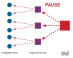
PAUSE-кадры поднимаются обратно ярус за ярусом и останавливают отправителей далеко от переполненного порта.
3.6.2 Опасности fabric без потерь и восстановление через сторожевой механизм
Хотя приоритетное управление потоком создаёт иллюзию физического слоя без потерь, опора на обратное давление канального уровня вводит структурные режимы отказа, которых не существует в сетях с коммутацией пакетов, допускающих потери. Когда очереди коммутаторов не могут сбрасывать пакеты для снятия перегрузки, давление распространяется назад по графу сети, порождая два различных режима отказа гипермасштаба: взаимоблокировки из-за зависимости буферов и PFC-штормы.
Определение 3.9: Циклическая взаимоблокировка из-за зависимости буферов
Циклическая взаимоблокировка из-за зависимости буферов — постоянная распределённая блокировка в сети без потерь, независимо от того, использует ли её обратное давление PAUSE-кадры PFC или кредиты InfiniBand. Набор очередей портов коммутаторов образует замкнутый цикл зависимостей, и каждая очередь держит пакеты, предназначенные для следующей очереди, в то время как обратное давление от той же очереди её приостанавливает.
- Значимость: Одна такая взаимоблокировка навсегда останавливает трафик через все участвующие порты и вышестоящие каналы и требует ручного вмешательства либо срабатывания сторожевого таймаута, сбрасывающего пакеты для восстановления. Fabric InfiniBand предотвращают её с помощью маршрутизации без взаимоблокировок и назначения виртуальных каналов (virtual lanes), а fabric Ethernet на базе PFC нужна та же дисциплина в конфигурации маршрутизации и приоритетов.
- Отличие: В отличие от PFC-шторма (который является переходным каскадом обратного давления, вызванным медленно опорожняющейся конечной точкой), взаимоблокировка из-за зависимости буферов — это статический, самоподдерживающийся топологический цикл, который не может разрешиться сам даже после прекращения инжекции трафика.
- Типичная ошибка: Предположение, что многоступенчатые fabric Clos (fat-tree) изначально невосприимчивы к взаимоблокировкам. Динамическая многопутевая маршрутизация, отказы каналов и лавинная рассылка при разрешении адресов могут вносить циклические зависимости forwarding между ярусами коммутаторов.
Графовая механика взаимоблокировок из-за зависимости буферов
В сети без потерь коммутатор не может переслать пакет в нижестоящий буфер
Направленный цикл в графе зависимостей буферов — необходимое условие циклической взаимоблокировки из-за зависимости буферов (определение 3.9), но один лишь цикл не устанавливает, что продвижение остановилось. Циклическая зависимость в Уравнение 1 становится взаимоблокировкой, когда занятые буферы не могут опорожниться и каждый участник ждёт своего последователя:
Когда каждый буфер цикла заполняется за свой настроенный порог паузы, каждый порт отправляет PAUSE-кадр PFC своему предшественнику. Поскольку ни один буфер не может передать пакет в приостановленного последователя, ни один буфер не может опорожниться, и ни один порт не может снять сигнал PAUSE. Весь цикл замораживается навсегда. Кольцо из четырёх коммутаторов, чьи очереди (
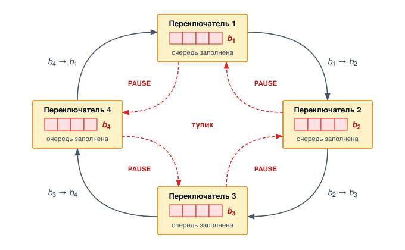
Изменения маршрутизации и лавинная рассылка могут создать зависимости, необходимые для взаимоблокировки. Во время отказа канала или сходимости маршрутов несогласованные таблицы forwarding могут создавать переходные циклы. Сеть IP с потерями в конце концов отбрасывает зацикливающийся пакет, когда истекает его time-to-live; у класса без потерь такого механизма освобождения нет, поэтому зацикливающийся трафик может заполнить буферы вдоль цикла и удерживать их. Если трафик занимает цикл взаимно заблокированных очередей, обратное давление может препятствовать продвижению, пока восстановление не разорвёт зависимость. Репликация multicast или broadcast также может заполнить очереди с пересекающимися зависимостями, а кросс-соединения и асимметричные резервные пути могут вносить циклы, отсутствующие в предполагаемой иерархической маршруте. Ни одно из этих условий само по себе не доказывает взаимоблокировку; занятые буферы и состояния паузы должны образовать замкнутый цикл ожидания, описанный моделью. Производственное развёртывание RoCE в Microsoft непосредственно столкнулось с триггером лавинной рассылки (war story 3.1).
Практический случай 3.1: Взаимоблокировка PFC в Microsoft (2016)
Контекст: Команда под руководством Чуаньсюн Го (Chuanxiong Guo) из Microsoft Research развернула RoCEv2 в дата-центрах Microsoft — парке, работающем в масштабе десятков тысяч серверов, — для поддержки чувствительных к задержке сервисов. Их проект предусматривал fabric без потерь с PFC, а команда разработала механизм PFC на основе Differentiated Services Code Point (DSCP), чтобы распространить развёртывание за границы виртуальных локальных сетей (VLAN) (Guo и др. 2016 г.).
Механизм: PFC взаимодействовал с лавинной рассылкой Ethernet, создавая циклическую зависимость буферов. Мёртвый сервер с неполным соответствием между IP-адресом и адресом media-access-control вызывал лавинную отправку пакетов без потерь вышестоящими коммутаторами на все порты; PAUSE-кадры PFC затем распространялись вверх в ответ на рассыпанный трафик, образуя замкнутый цикл приостановленных буферов.
Влияние: Трафик без потерь через коммутаторы в цикле полностью остановился и оставался остановленным, потому что ни один буфер в цикле зависимости не мог опорожниться без внешнего вмешательства.
Исправление: Microsoft заблокировала вход broadcast- и multicast-трафика в классы трафика без потерь и стала отбрасывать пакеты без потерь, когда соответствующая запись Address Resolution Protocol (ARP) была неполной, вместо возврата к лавинной рассылке.
Урок для систем: Обратное давление PFC — структурная уязвимость Ethernet без потерь в гипермасштабе. Fabric RoCE нужны дисциплина классов пакетов, телеметрия PAUSE PFC и аппаратные предохранители, потому что механизм, спроектированный для избежания потери пакетов, сам может стать режимом отказа. Fabric обучения ML на базе RoCE наследуют этот риск напрямую. Одна неполная запись ARP может заморозить класс без потерь, который несёт градиенты обучения на нескольких тысячах GPU, — кластер выглядит здоровым, но градиенты между исполнителями не текут.
PFC-штормы и потоки-жертвы
В отличие от статического топологического цикла, PFC-шторм — это динамическое, неуправляемое явление усиления, запускаемое, когда один «медленный опорожнитель» (ускоритель, остановленный насыщением шины памяти, вытеснением со стороны операционной системы или деградировавшим трансивером с повышенным уровнем битовых ошибок) не успевает принимать пакеты на скорости канала. Очередь подключённого к ToR коммутатора заполняется и отправляет PAUSE-кадр отправителю. Поскольку многопортовые коммутаторы агрегируют трафик из многих источников через общие пакетные буферы, приостановленная очередь блокирует выделение буферов для несвязанных пакетов. Пакеты одного класса приоритета также покидают приостановленную очередь по порядку, поэтому пакет, направленный в незагруженный порт, ждёт за заблокированными пакетами впереди (head-of-line blocking). Коммутаторы spine, питающие этот ToR, затем заполняют свои буферы и приостанавливают другие leaf-коммутаторы, отправляющие через них трафик, и каждый дополнительный ярус расширяет множество приостановленных каналов, пока не остановится и трафик между парами узлов, никогда не общавшихся с остановившимся исполнителем. Эти потоки-жертвы превращают один медленный узел в задержку барьера для всего задания, потому что каждый исполнитель параллелизма по данным, чей путь пересекает приостановленный порт spine, теперь опаздывает к барьеру.
Распространение перегрузки — механизм, стоящий и за штормом, и за взаимоблокировкой. Шторм — это форма, которую поддерживает медленный опорожнитель, поэтому он может закончиться, когда опорожнитель восстановится, в отличие от замкнутого цикла взаимоблокировки.
Деградировавший трансивер — один из таких медленных опорожнителей, поэтому расчёт экспозиции компонентов показывает, как часто кластер должен ожидать хотя бы один такой случай, хотя сама по себе экспозиция не оценивает вероятность PFC-шторма.
Инженерный расчёт 3.4: Вероятность хотя бы одной деградации трансивера
Задача: В эксплуатации находится RoCE-кластер на 4096 GPU, больший, чем референсный кластер. Если вероятность того, что данный трансивер начнёт деградировать в данный день, равна 0.001 percent, какова вероятность того, что в данный день деградирует хотя бы один трансивер?
Математика: Предположим независимые события деградации трансиверов с одинаковой вероятностью на каждое устройство.
- Полная экспозиция: 4096
3 link tiers = 12,288 каналов, то есть 24,576 трансиверов. - Вероятность нулевых деградаций трансиверов:
. - Вероятность хотя бы одной деградации:
(около 21.8 percent).
Системный вывод: при этих допущениях крупный RoCE-кластер ежедневно сталкивается с вероятностью 21.8 percent наличия хотя бы одного деградировавшего трансивера. Этот результат обосновывает необходимость аппаратной телеметрии и автоматизированного восстановления, однако оценка риска остановок всего fabric дополнительно требует условной вероятности того, что деградация вызовет и распространит PFC-шторм.
Watchdog-восстановление и лосиная альтернатива
Коммутаторы могут использовать таймеры PFC watchdog для обнаружения затяжных пауз и запуска восстановления без полной перезагрузки. Настроенный порог
Эта системная хрупкость подталкивает гипермасштабных операторов к архитектурам следующего поколения, таким как Ultra Ethernet Consortium (UEC) (Ultra Ethernet Consortium 2025 г.), подробно описанному в Глава 3.10.1, и к устойчивым к потерям проектам RDMA (Mittal и др. 2018 г.). Проекты, сочетающие пакетное распыление (packet spraying) (отправку пакетов одного потока по многим путям) с контролем перегрузки и выборочной ретрансмиссией, могут работать без канального PFC. Удаление PFC устраняет его паузные взаимоблокировки и штормы, но восстановление на конечных точках всё равно должно ограничивать штраф на время завершения из-за перегрузки и потерь.
3.6.3 Сквозной контроль перегрузки с DCQCN и HPCC
Поскольку канальный PFC срабатывает только тогда, когда буфер коммутатора уже почти исчерпан, опора на одни лишь паузы приглашает каскады и отбрасывания watchdog из Глава 3.6.2. Удержание очередей ниже этих порогов требует сквозного контроля перегрузки, который дросселирует скорости инъекции отправителей до заполнения буферов. Для рабочей нагрузки BSP с целевым временем завершения этот контроль скорости — требование к задержке, а не опциональная оптимизация пропускной способности: задержка необходимой передачи продлевает границу синхронизации, поэтому контроллер должен балансировать доставленную пропускную способность против очередей и хвостов восстановления.
Первое широко развёрнутое решение, DCQCN,8 работает как реактивная петля обратной связи с использованием ECN (Zhu и др. 2015 г.). Когда глубина очереди коммутатора превышает настроенный порог, он помечает бит ECN в заголовке пакета. Приёмник отражает эту помеченность отправителю через пакет уведомления о перегрузке (CNP), побуждая отправителя снизить скорость инъекции с помощью алгоритма мультипликативного уменьшения. DCQCN широко поддерживается, но продакшн AI-коллективы выявляют проблему настройки, поскольку петля обратной связи требует полного сетевого round trip для вступления в силу. Высокий порог ECN оставляет слишком мало запаса буфера, чтобы синхронизированные всплески успели замедлиться до достижения порога паузы PFC, а низкий порог заставляет отправителей агрессивно дросселировать на кратковременных всплесках очереди и недоиспользовать канал. Следовательно, пороги ECN и поведение прошивки NIC представляют собой компромисс между избеганием PFC, пропускной способностью, наблюдаемостью и хвостовой задержкой, а не предлагают один стабильный оптимум (Gangidi и др. 2024 г.).
HPCC9 использует внутрисетевую телеметрию (INT) для предоставления отправителю большей информации о нагрузке пути (Li и др. 2019 г.). Измерения коммутаторами занятости очередей и переданного трафика позволяют контроллеру оценить подходящую скорость инъекции, а не реагировать лишь на бинарный признак перегрузки. Эта информация всё ещё приходит после задержки обратной связи, поэтому контроллер должен учитывать меняющуюся нагрузку и избегать чрезмерной реакции. Оценённый проект уменьшает накопление очередей и хвостовую задержку, но требует поддержки телеметрии коммутаторами и совместимой обработки на конечных точках. DCQCN требует менее детальной обратной связи от коммутаторов, обменивая это более простое требование к развёртыванию на иную проблему настройки.
3.6.4 Адаптивная маршрутизация
Дросселирование отправителей с помощью DCQCN или HPCC снимает заполняющуюся очередь лишь за счёт замедления потоков, её пересекающих, даже когда параллельные spine-каналы простаивают. Этот дисбаланс — проблема коллизий хэшей ECMP из Глава 3.2: поскольку статическое хэширование потоков,10 хорошо работающее для миллионов мелких потоков, привязывает каждый постоянный elephant-поток к фиксированному пути, AllReduce из 8 потоков на 4 равнозначных путях может поместить 4 потока на один канал, тогда как другой не несёт ничего. В синхронизированном шаге обучения этот перегруженный канал определяет время завершения и может вдвое сократить полезную пропускную способность.
Адаптивная маршрутизация смягчает эту проблему, позволяя коммутаторам выбирать среди подходящих выходных путей на основе информации о перегрузке, а не только статического хэша. Такой выбор перемещает трафик на пути со свободным местом и не добавляет ёмкости, поэтому исправляет коллизию, но не может облегчить fabric, все пути которой заполнены. Реализация зависит от протокола и устройства. Распыление на уровне пакетов11 может отправлять пакеты одного соединения по разным путям, поэтому приёмник может наблюдать переупорядочивание. Совместимая поддержка на конечных точках должна принимать внеочередное размещение или восстанавливать требуемый транспортом порядок; само по себе наличие InfiniBand не гарантирует произвольное распыление по каждому пути. Ethernet-fabric могут также использовать flowlet-коммутацию, которая меняет путь потока между всплесками, разделёнными паузой, достаточно большой для сохранения порядка пакетов на кандидатных путях, поэтому её полезность зависит от того, как часто рабочая нагрузка оставляет такие паузы относительно разницы задержек путей.
Обмены экспертами MoE иллюстрируют, почему важно разнообразие путей: плотный обмен между 64 экспертно-параллельными рангами содержит не более
3.6.5 Проблема incast в ML
Контроль перегрузки и адаптивная маршрутизация управляют потоками, пересекающими внутреннюю часть fabric. Иной режим отказа возникает на краю, где сам паттерн трафика перегружает один порт независимо от того, сколько ёмкости предоставляет внутренняя часть.
Определение 3.10: Сходящийся трафик
Incast — это паттерн трафика ML-кластера «многие к одному», при котором большое число отправителей одновременно передаёт данные одному порту приёмника. Он концентрирует трафик линейной скорости от множества источников в одну очередь коммутатора и может переполнить буфер, если всплеск длится дольше доступной буферизации и времени реакции управления, даже когда остальная часть fabric не перегружена.
- Значимость: плоская агрегация, синхронизированные чтения хранилища или другие фазы веерного входа могут направить множество отправителей к одному приёмнику. Умышленно наихудший сценарий здесь предполагает RoCE-fabric, все порты которой работают на 400 Gb/s. В нём 256 отправителей каждый передаёт на 50 GB/s к одному выходному порту коммутатора, создавая 12.8 TB/s предлагаемой нагрузки против порта 400 Gb/s. Буфер 32 MB при указанных допущениях переполняется примерно за 2.5 μs, после чего коммутатор либо отбрасывает пакеты, либо — в развёртывании с PFC — приостанавливает соседей вверх по потоку. Пример — граница стрессовой нагрузки, а не матрица трафика кольцевого AllReduce.
- Отличие: в отличие от общей перегрузки (которая возникает на общих внутренних каналах, когда совокупный трафик превышает ёмкость канала), incast — это узкое место на конечной точке. Он возникает даже тогда, когда каждый внутренний spine- и leaf-канал полностью свободен, потому что узкое место — единственный порт назначения, а не внутренняя часть fabric.
- Типичная ошибка: incast не обязательно редок или непредсказуем. Обучающие задания создают его по расписанию — всякий раз, когда много GPU читают шарды датасета с одной узла хранения или записывают на него контрольные точки, а также на шаге агрегации древовидного или иерархического редукта, где несколько рангов отправляют частичные суммы одному родителю. Градиентное кольцо — другое дело: его потоки «точка-точка» всё ещё могут столкнуться на общем выходе, но это горячая точка, а не incast «многие к одному». Серьёзность зависит от алгоритма коллектива, топологии, маршрутизации и oversubscription, поэтому её нужно измерять и смягчать, а не считать краевым случаем.
В наихудшем incast 12.8 TB/s предлагаемого трафика от 256 отправителей сходится на одном выходном порту 400 Gb/s (50 GB/s) (Рисунок 13). Каждый отправитель инъецирует на 50 GB/s. Буфер заполняется за конечный интервал; управляющая обратная связь может снизить прибытия, отбрасывания могут удалить избыточный трафик, а обратное давление может переместить очереди вверх по потоку. Распространится ли это давление, зависит от общих очередей и путей, несущих трафик. Пусть совокупная скорость прибытия на один выход —
где
⇄ Для контраста: Очереди запросов, чьи задержки обслуживания и поступления определяют задержку (latency) обслуживания, а не занятость буферов коммутатора, рассматриваются в Теория очередей для батчевого инференса.
В приведённом выше намеренно наихудшем сценарии incast
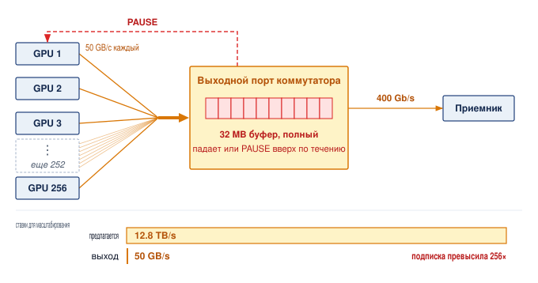
Синхронный ML-трафик подвержен как настоящему fan-in, так и «горячим точкам» на общем выходном порте. Когда слой завершает вычисление обратного прохода, множество рангов может одновременно выпустить трафик, а плоские или иерархические фазы агрегации способны создать настоящий fan-in. Промышленные кластеры смягчают оба случая по трём взаимодополняющим направлениям:
- Время. Расслоение по слоям запускает AllReduce каждого градиентного ведра сразу, как только обратное распространение его формирует. Градиенты последних слоёв редуцируются, пока более ранние слои ещё вычисляются, поэтому коммуникация размазывается по обратному проходу вместо того, чтобы выстреливать одним синхронным всплеском. То же расслоение является перекрытием коммуникации и вычислений, так что оно вдобавок скрывает время передачи за оставшимися вычислениями обратного прохода.
- Пространство. Выбор алгоритма коллективных операций ограничивает fan-in на отдельных портах коммутаторов. Иерархические и локальные для рельсов редукции агрегируют градиенты поэтапно, так что ни один порт не должен одновременно поглощать трафик всех отправителей, а топологически осознанное размещение уводит конкурирующие кольцевые потоки с портов с оверскрипшном.
- Приоритет. Классификация качества обслуживания (QoS) помечает градиентный трафик высшим классом обслуживания, чтобы снизить помехи от фонового трафика хранилищ или управления; общие каналы, буферы и арбитраж всё ещё ограничивают изоляцию.
Эти смягчения размазывают всплеск по времени, пространству и приоритету, но не устраняют перегрузку и хвостовую задержку. Поэтому промышленный кластер должен обеспечивать предсказуемое время шага при остаточной перегрузке.
3.7 Level 5. Проектирование кластера и кейсы
Проектирование кластера сводится к конкретным инженерным решениям: какие кабели закупить, как соединить стойки, какой протокол развернуть и как проверить, что полученный fabric доставляет пропускную способность, которую ожидает задача обучения. На этом последнем уровне технологического стека провода, транспорт, топология и управление перегрузкой объединяются в целостную систему — сквозной «градиентная шина», который ощущает тысячи распределённых GPU как одну машину. Две репрезентативные крупномасштабные архитектуры, одна на InfiniBand и одна на Ethernet, раскрывают компромиссы, определяющие ML-инфраструктуру (NVIDIA 2023 г.; Meta Engineering 2024 г.; Gangidi и др. 2024 г.).
3.7.1 «Градиентная шина» от GPU к GPU
В хорошо спроектированном кластере сетевой fabric выступает расширением системной шины, учитывающим планировщик, а не пассивной трубой. Упомянутый в начале главы пропасть ~9× на направление между NVLink и одним внешним портом — это разрыв, который кластер должен скрыть. Перекрытие коммуникации и вычислений, которому закон парка (Fleet Law) отводит
Размещение — второй механизм, поскольку оно решает, какая коммуникация пересекает каждую границу. Размещение, заданное иерархией пропускной способности из Иерархия пропускной способности — тензорный параллелизм внутри домена NVLink, а стадии конвейера и реплики параллелизма по данным между узлами, — становится правилом разводки в масштабе кластера, потому что каждый ярус fabric должен быть подготовлен под размещённый на нём трафик. Каналы между узлами должны соответствовать бюджету передачи активаций конвейера, чего одна лишь физическая близость не гарантирует. Полный fabric несёт обмены параллелизма по данным, которые накопление градиентов делает более редкими, а перекрытие частично скрывает. Поэтому промышленные решения различаются главным образом тем, как подготавливается внешний ярус, как показывают два следующих примера.
3.7.2 Архитектура NVIDIA DGX SuperPOD
NVIDIA DGX SuperPOD, конкретная реализация градиентной шины, подготавливает внешний ярус, получая отсутствие потерь от канального уровня и согласовывая разводку с рангами параллелизма по данным, так что хвостовое поведение fabric зависит от аппаратных механизмов, а не от настройки управления перегрузкой. Он соединяет узлы DGX H100 сетью NDR InfiniBand (NVIDIA 2023 г.). Каждый узел выступает плотным вычислительным островом: eight GPU H100 соединены через NVSwitch, что даёт каждому GPU 900 GB/s двунаправленной внутренней пропускной способности. Внешне каждый GPU дополняется NIC ConnectX-7 с инжекционной пропускной способностью 400 Gb/s. По стандартной масштабируемой единице из 32 nodes (256 GPUs) это даёт совокупную инжекционную пропускную способность 12.8 TB/s (256
Эта архитектура соединяет все пять уровней сетевой модели в единую цепочку. На уровне провода (уровень 1) она стандартизирует каналы NDR 400 Gb/s, выбирая медь или оптику по расстоянию между узлом и его leaf-коммутатором и между leaf и spine. Поскольку эти каналы используют нативное управление потоком на канальном уровне InfiniBand с кредитами (уровень 2), они дают среду без потерь без хрупкости каскадов PAUSE, свойственной Ethernet PFC. Над транспортом топология (уровень 3) выстраивает коммутаторы как rail-оптимизированное fat-дерево, выравнивая GPU-рельсы по каждой масштабируемой единице так, что трафик одного рельса остаётся локальным, а межрельсовый пересекает слой spine (заменяя более простое размещение ToR на стойку из Глава 3.5.1, иллюстрировавшее радикс коммутатора). Когда межранговый трафик поднимается к spine, аппаратная адаптивная маршрутизация (уровень 4) выбирает среди путей через spine, сохраняя бисекционное поведение. Наконец, на уровне кластера (уровень 5) дополнительная коммутация объединяет несколько масштабируемых единиц SuperPOD в большие парки (NVIDIA 2023 г.): для модели на 175 млрд параметров four масштабируемых единиц SuperPOD соединяются так, что 1,024 GPUs функционируют как одна синхронная обучающая система.
3.7.3 Платформа Meta Grand Teton
Кластеры Meta Grand Teton идут противоположным путём, принимая бремя настройки перегрузки Ethernet в обмен на многовендорность поставок и общую эксплуатацию. Meta раскрыла два кластера на Grand Teton с 24,576 GPU H100: один — на RoCE поверх fabric Ethernet Arista/OCP, другой — на NVIDIA Quantum-2 InfiniBand, оба с конечными точками 400 Gb/s. Meta использовала оба для обучения Llama 3 и сообщила о продолжающемся обучении Llama 3 на кластере RoCE (Meta Engineering 2024 г.). Ethernet позволяет Meta закупать коммутаторы у нескольких вендоров и переиспользовать оптическую инфраструктуру и инструменты управления своего front-end парка обслуживания, избегая операционного «острова» выделенного InfiniBand.
Исследование Meta по RoCE показывает, как решения уровня 4 влияют на fabric в целом. Там описаны сторожевые таймеры PFC для длительных событий PAUSE, итеративные схемы маршрутизации сверх простого ECMP, перспективные эксперименты с flowlet-коммутацией, а также развёртывание 400G, в котором настройка DCQCN оказалась настолько трудной, что Meta пошла без DCQCN, полагаясь на PFC плюс коллективные механизмы управления более высокого уровня (Gangidi и др. 2024 г.). Этот выбор перенёс управление инжекцией с NIC в библиотеку коллективных операций, а не устранил его, и исследование предупреждает, что подход может подходить не для всех сценариев. Урок — проверять сочетание поведения конечных точек, маршрутизации и управления потоком под ожидаемым коллективным трафиком. Одна лишь пропускная способность при больших передачах не устанавливает задержку мелких сообщений и хвосты восстановления, и эти результаты нельзя вывести из ярлыка «Ethernet» или «InfiniBand». Задержка мелких сообщений важна в обучении из-за частых мелких обменов, обнажающих стоимость старта, даже когда полный шаг длится секунды, а в обслуживании — в степени, определяемой разбиением модели, формой запросов и целями уровня обслуживания (SLO).
Эти кейсы завершают пятиуровневый стек, показывая, как физический провод, транспортный протокол, топология и управление перегрузкой превращаются в один промышленный fabric. Оставшаяся операционная проблема — не как построить один быстрый кластер, а как разделять этот дорогой субстрат между командами и рабочими нагрузками, не жертвуя предсказуемой производительностью, которой требует обучение.
3.8 Виртуализация сети
Когда одиночная задача обучения оставляет стойки и spine-каналы простаивающими между запусками, операторы нарезают кластер между несколькими арендаторами и задачами — и обнаруживают, что всплеск контрольной точки соседа или прогон оценки может уморить синхронный AllReduce на общих NIC и буферах коммутаторов. Виртуализация сети должна сделать разделение совместимым с выделениями пропускной способности, целями по задержке и изоляцией доступа. Эти требования взаимодействуют, поскольку арендаторы всё ещё делят физические каналы и буферы. Оператор может зарезервировать 80 percent бисекционной пропускной способности
3.8.1 Аппаратная виртуализация NIC с SR-IOV
Маршрутизация трафика множества арендаторов через программный виртуальный коммутатор гипервизора возвращает в точности те накладные расходы на хостовый CPU и микросекундный джиттер, ради обхода которых создавался RDMA. Облачные провайдеры вместо этого предоставляют ресурсы NIC виртуализированным GPU-инстансам через single-root I/O virtualization (SR-IOV) — стандарт, позволяющий физической NIC представлять множество виртуальных функций (VF). Каждая VF располагает собственными аппаратными очередями, регистрами дверного звонка (в которые софт пишет, сообщая NIC о ждущей работе) и отображениями DMA, и софт может назначать каждую VF рабочей нагрузке. Прямо назначенная VF может убрать посредничество хостового софта из активного пути DMA, при этом драйверы и ПО виртуализации всё ещё конфигурируют доступ и управляют устройством. Производительность зависит от NIC, размещения ввода-вывода и конкурирующего трафика. Поскольку VF делят физические ресурсы, логика размещения должна резервировать ёмкость NIC и политику QoS вместе с GPU, а не считать сеть неограниченным пулом.
Однако аппаратная изоляция всё равно требует явной политики пропускной способности. SR-IOV предоставляет множество VF, делящих физические ресурсы NIC; администраторы могут добавлять политики QoS на VF или группу VF, чтобы ограничить или гарантировать пропускную способность, например назначив eight VF по 50 Gb/s каждая на NIC 400 Gb/s. Для модели на 175 млрд параметров, обучающейся на кластере с множеством арендаторов, такая настроенная нарезка может помешать соседнему арендатору воровать пропускную способность, но она же задаёт жёсткий потолок пиковой пропускной способности. Задача обучения должна быть спроектирована под работу внутри этой доли, поскольку никакая программная оптимизация не позволит вырваться за настроенный лимит VF.
3.8.2 Изоляция трафика и качество обслуживания
Ограничения скорости на VF ограничивают то, что каждый арендатор инжектирует на NIC, но трафик разных арендаторов всё равно сливается в общих буферах коммутаторов fabric и на spine-каналах. Когда модель на 175 млрд посреди градиентного AllReduce, а соседняя задача инициирует сохранение контрольной точки на 100 GB, этот всплеск занимает порт 400 Gb/s на 2 s на полной скорости канала. Он также может захватить большую долю общих spine-каналов на этот интервал, растягивая каждый AllReduce, чей трафик их пересекает. Чтобы предотвратить этот эффект «шумного соседа» внутри fabric, высокопроизводительные коммутаторы опираются на механизмы качества обслуживания (QoS), навязывающие справедливость на уровне пакетов и очередей.
InfiniBand изолирует трафик с помощью виртуальных каналов (VL, virtual lanes), которые поддерживают отдельное состояние кредитов и буферов внутри физической линии на до 16 виртуальных каналов (один из них зарезервирован для управления подсетью) (InfiniBand Trade Association 2000 г.). Если всплеск трафика хранилища исчерпывает кредиты своего канала, градиентный канал с доступными кредитами может продолжать передачу, хотя оба канала по-прежнему делят пропускную способность линии и арбитраж. Fabric Ethernet и RoCE достигают схожего разделения через зависящие от устройства отображения классов трафика и политики очередей. Внутри этих отображений улучшенный выбор передачи (enhanced transmission selection) выделяет долю пропускной способности линии каждому классу трафика, а коммутаторы могут также разделять буферные ресурсы и ресурсы пересылки на сетевые слайсы. В обоих технологических стеках эти механизмы снижают взаимные помехи только тогда, когда классификация, распределение ресурсов и планирование согласованы по всему пути, поскольку общие приоритеты или буферные пулы всё ещё могут связывать арендаторов.
Виртуализация решает проблему совместного использования, но затрудняет диагностику производительности. Когда задание обучения замедляется на кластере с несколькими арендаторами, причиной может быть деградация физической линии, «шумный сосед», превышающий выделенную ему пропускную способность, или неверно настроенная политика QoS. Различить эти случаи требует систематического мониторинга.
3.9 Мониторинг и отладка
Проблемы производительности сети в ML-кластерах коварны тем, что проявляются как тихие потери (silent waste), а не как явные отказы. Деградировавший трансивер, вызывающий снижение эффективной пропускной способности на 10 percent, может замедлять каждую итерацию обучения лишь на 2–3 percent. Замедление невелико, потому что потерянная пропускная способность растягивает только открытую коммуникационную долю шага (те 30 percent, что приняты в оценке oversubscription, минус всё, что скрывает наложение), и растягивает её примерно обратно пропорционально оставшейся пропускной способности. Столь малый дрейф легко маскируется естественной вариативностью контрольных точек или загрузки данных. За 30-дневное обучение на 1,024 GPUs это невидимое торможение накапливается примерно в 15,000–22,000 потерянных GPU-часов, сжигая около $30,000–$44,000 при $2/GPU-hour, не вызвав ни одной тревоги.
Традиционные ИТ-инструменты мониторинга вроде SNMP или ICMP-пинга измеряют связность, а не устойчивую пропускную способность, требуемую для RDMA. Эффективная наблюдаемость требует трёхслойного подхода: мониторинг приложения (алгоритмическая пропускная способность NCCL), мониторинг транспорта (PFC-паузные кадры, частоты ретрансмиссий) и физический мониторинг (ошибки FEC, затухание сигнала) (Jeaugey 2017 г.; Gangidi и др. 2024 г.). Три слоя повторяют пятиуровневую модель сверху вниз. Мониторинг приложения наблюдает коллектив, который интегрирует Уровень 5; мониторинг транспорта наблюдает механизмы восстановления Уровня 2 и управления перегрузкой Уровня 4; физический мониторинг наблюдает провод Уровня 1. Только сопоставляя сигналы между этими слоями, операторы могут обнаружить, что «медленное обучение» вызвано одной деградировавшей кабельной линией в одной стойке.
3.9.1 Телеметрия уровня линий
Пограничный кабель или перегревающийся трансивер редко рвут линию outright; вместо этого они накапливают символьные ошибки, вызывают отбросы при передаче или переключаются на более медленное состояние линии, пока задание продолжает работать. Заметить такой физический дрейф позволяет опрос счётчиков портов коммутаторов и сетевых карт, которые сообщают о переданных и полученных данных, отбросах при передаче, символьных ошибках и событиях падения линии; в InfiniBand их читает утилита вроде perfquery, а устройства Ethernet/RoCE выставляют эквивалентную телеметрию через собственные интерфейсы управления (Linux man-pages project 2026 г.). Счётчики данных измеряют утилизацию; отбросы требуют разбирательства в соответствии с политикой трафика и восстановления порта; символьные ошибки и события падения линии — свидетельства деградирующего сигнала. Сопоставление этих счётчиков со скоростью линии, состоянием lane и поведением транспорта сужает причину; один счётчик сам по себе не идентифицирует дефектный кабель или трансивер.
Опрос состояния линий наряду со счётчиками трафика может выявить тихую деградацию (silent degradation). Линия, работающая на HDR (200 Gb/s) вместо ожидаемой скорости NDR (400 Gb/s), может оставаться подключённой, предоставляя лишь половину ожидаемой пропускной способности. Линия, которая после неисправности коннектора тренируется с двумя активными lane из четырёх, отказывает так же: она остаётся в работе, а её пропускная способность урезана вдвое. Оба случая видны только при сопоставлении согласованной скорости и состояния lane с базовым развёртыванием.
Для 1,024 GPUs и примерно 3,000 линий принятая мгновенная вероятность деградации 0.1 percent даёт в среднем 3 деградировавших линий и, при независимых событиях, вероятность 95 percent хотя бы одной деградации. Эта вероятность измеряет не то же, что дневная цифра в блокноте 3.4. Тот блокнот спрашивает, как часто начинается новая деградация; эта оценка спрашивает, сколько деградировавших линий присутствует в любой момент. Устойчивая распространённость — доля деградировавших линий в любой момент — примерно равна скорости возникновения, умноженной на то, как долго деградировавшая линия остаётся в эксплуатации, а тихая деградация по определению остаётся в эксплуатации, пока кто-то не посмотрит, поэтому распространённость может многократно превышать то, что подсказывает малая дневная скорость возникновения. Обе скорости — допущения сценария, а не измеренные данные парка.
Задание замедляется, когда затронутый путь ограничивает требуемый ему трафик; охват по всему парку сам по себе не определяет замедление задания. Однако когда деградировавшая линия лежит на пути кольцевого AllReduce, цена достигает каждого участника, поскольку каждый раунд ждёт своего самого медленного перехода, и всё кольцо движется в темпе этой одной линии.
↪ Серый отказ — общий случай компонента, который деградирует, не отказывая, — и почему синхронное задание ощущает его как отставшего (straggler), развиты в Страгглеры против fail-stop-отказов.
3.9.2 Проверка пропускной способности и задержки
Чистые счётчики портов и активное состояние NDR-линии 50 GB/s всё ещё не гарантируют, что пара узлов может доставить эту скорость заданию обучения: деградировавший путь PCIe, скачок между сокетами NUMA или перегруженный срез spine могут тормозить RDMA-передачи, не увеличив ни одного счётчика физических ошибок. Поэтому активная проверка должна измерять пропускную способность и задержку, которых задание фактически может достичь по полному пути хост–хост. Парные тесты вроде ib_write_bw могут заполнить матрицу пропускной способности всех пар или выборочное подмножество для большого парка (linux-rdma project 2026 г.). Пара с низкой пропускной способностью указывает путь для расследования. Сопоставление затронутых пар с маршрутизацией и физической телеметрией помогает отличить проблему общего коммутатора или кабеля от ограничений конечных точек.
Для чувствительной к задержке синхронизации ib_write_lat запускает ping-pong-тест с малыми RDMA-записями и сообщает половину измеренного времени кругового обхода как одностороннюю задержку. Показание вроде 2 nccl-tests затем нагружают коллективную коммуникацию по целевой группе работников. Точка-точка результаты задают базовую линию пути, тогда как коллективные тесты выявляют издержки от конкурентного трафика и планирования, недоступные изолированным парам.
3.9.3 Систематический процесс отладки
Когда задание обучения сообщает о пропускной способности ниже ожидаемой, порядок диагностики должен сохранять модель слоёв, а не начинаться с кабелей. Следующая последовательность движется от прикладных симптомов к физическим причинам через три слоя мониторинга: шаги 1 и 2 — на прикладном слое, шаги 3 и 4 — на транспортном, шаг 5 — на физическом:
- Проверить утилизацию GPU: исключить вычислительные узкие места с помощью телеметрии ускорителя (например,
nvidia-smi). Одна лишь высокая утилизация SM не исключает сетевое узкое место, поскольку коммуникационные ядра тоже могут держать SM активными. Сопоставьте утилизацию с вычислительной и коллективной частями временной шкалы шага. Однако низкая утилизация не указывает автоматически на fabric. Голодный входной конвейер (загрузка данных или хранилище) даёт тот же симптом, поэтому прежде чем исследовать сеть, убедитесь, что путь данных успевает питать ускорители. - Изучить журналы библиотеки коллективов: включите отладочный вывод библиотеки (например,
NCCL_DEBUG=INFOв NCCL), чтобы увидеть, какой сетевой транспорт был выбран, обнаруженную между узлами пропускную способность и любые откаты к более медленным протоколам. - Запустить точечные тесты: выполните парный тест пропускной способности (например,
ib_write_bw) между конкретными узлами задания. Одна деградировавшая линия может стать узким местом всего кольца в кольцевом AllReduce. - Проверить счётчики PFC/ECN: осмотрите счётчики коммутаторов вдоль пути. Устойчивая активность PFC указывает на постоянную перегрузку, которую следует расследовать на уровне планировщика или маршрутизации.
- Проверить физический уровень: проверьте символьные ошибки и счётчики CRC, чтобы выявить отказавшие трансиверы или кабели.
В этом порядке прикладные симптомы и журналы коллективов показывают, виновата ли сеть и не откатилась ли библиотека к более медленному протоколу; точечные тесты идентифицируют отказавший путь; транспортные счётчики показывают, замешана ли перегрузка; физическая телеметрия подтверждает, деградирует ли сам провод. Каждый слой, таким образом, сужает поиск до того, как будет заменено какое-либо оборудование.
Контрольная точка 3.5: Диагностика замедления обучения
Ваше задание обучения модели 175B работает уже 3 дней на референсном кластере из 1,024 GPU. Вы замечаете, что время итерации постепенно выросло с 4.2 s до 4.8 s (замедление на 14 percent). Утилизация GPU, сообщаемая nvidia-smi, упала с 92 percent до 85 percent.
3.10 Сетевые технологии, сдвигающие потолок
Мониторинг удерживает развёрнутые fabric честными, но не может выйти за физические потолки, которые он измеряет, — такие как дальность и лимиты мощности, к которым приближается медь при высоких скоростях передачи сигнала. Новые технологии fabric заслуживают внимания, только когда сдвигают одну из этих границ. По мере масштабирования кластеров к 100 000 GPU устойчивыми проектными переменными являются энергопотребление на бит, дальность и соотношение вычислительной ёмкости, памяти и сети, а не названия продуктов, прикреплённые к конкретному роадмапу.
3.10.1 Конвергенция протоколов и плотность линий
Стандартный RoCEv2 оставляет операторов с хрупкими порогами PFC-пауз и ECMP-хешированием, никогда не проектировавшимся для синхронизированных elephant-потоков, тогда как InfiniBand привязывает fabric к стеку одного вендора. Консорциум Ultra Ethernet (UEC) устраняет эти пределы надёжности и балансировки нагрузки для трафика AI/HPC поверх Ethernet. Его транспорт Ultra Ethernet сочетает распыление пакетов (packet spraying) по нескольким путям, гибкую упорядоченность, несколько транспортных сервисов доставки, изменения управления перегрузкой и телеметрию (Ultra Ethernet Consortium 2025 г.). Архитектурный вопрос состоит в том, как выбранный сервис доставляет требуемые семантики завершения и упорядочивания при перегрузке или потерях. Поэтому усечение пакетов (обрезание переполнившегося пакета до заголовка вместо его отбрасывания, чтобы приёмник сразу узнал о потере), повторные попытки и восстановление конечных точек следует оценивать по их влиянию на хвосты времени завершения и на стоимость ресурсов. Воспроизводит ли дизайн механизм fabric без потерь — не тот тест.
Более высокая коммутируемая ёмкость атакует не только чистую пропускную способность, но и количество транзитных узлов. XDR InfiniBand даёт 800 Gb/s на порт, а дорожные карты Ethernet включают скорости каналов 800GbE и 1.6TbE (NVIDIA 2026 г.c; Ethernet Alliance 2025 г.). Кремний коммутаторов Ethernet с портами 1.6 Tb/s доводит совокупную ёмкость до 102.4 Tb/s в актуальных дизайнах класса Tomahawk 6 (Broadcom Inc. 2025 г.). Один порт 1.6 Tb/s даёт в 4 раза большую пропускную способность, чем порт 400G, поэтому тот же ASIC может вместо этого выставить в 4 раза больше портов 400G. Именно расходование этой ёмкости на радикс, а не на скорость порта, выравнивает топологию, потому что в fat-tree число хостов растёт как
3.10.2 Оптические соединения
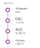
Каждый дополнительный метр сдвигает fabric от меди к оптике.
Перевод портов с 400 Gb/s на скорости 800 Gb/s и 1.6 Tb/s из Глава 3.10.1 требует больше линий, более быстрых линий или и того и другого. Восемь линий класса 100 Gb/s актуальных каналов NDR дают 800 Gb/s, но порт 800 Gb/s на четырёх линиях или порт 1.6 Tb/s на восьми удваивает скорость каждой линии до класса 200 Gb/s, что резко увеличивает вносимое затухание на метр пассивной меди. По мере сокращения достижимой дальности, в согласии с примером бюджета канала из Глава 3.3.3, SerDes вынужден тратить больше энергии на бит на выравнивание сигнала. Активные электрические кабели, добавляющие чипы ретаймеров для регенерации сигнала в середине кабеля, расширяют эту дальность, но привносят собственные задержку и энергопотребление, оставляя оптические соединения главным рычагом влияния на энергию на бит и дальность.
Совместно упакованная оптика (co-packaged optics, CPO) размещает оптические модули рядом с коммутатором или ускорителем на общей подложке корпуса. Перенос оптического модуля с лицевой панели коммутатора на корпус сокращает электрический путь от SerDes до оптики с сантиметров печатных дорожек до миллиметров, что снижает нагрузку на восстановление сигнала перед передачей по волокну. Принимающий оптический модуль преобразует сигнал обратно в электрическую форму. Волокно по-прежнему вносит задержку распространения и имеет бюджет потерь; размещение оптики ближе к процессору эти ограничения не снимает.
Совместно упакованная оптика поэтому меняет электрическую часть бюджета канала, сохраняя преимущества оптической передачи по дальности. Достижимая дальность по-прежнему зависит от волокна, разъёмов, оптической мощности и конструкции приёмника. Релевантное сравнение фиксирует полезную ёмкость и цели по ошибкам, а затем сопоставляет энергию, сэкономленную за счёт более короткого электрического пути, с издержками на корпусирование и обслуживание интеграции. Энергетическую сторону этого сравнения можно оценить порт за портом для одного коммутатора.
Инженерный расчёт 3.5: Оптический дивиденд
Задача: сколько мощности оптики экономит коммутатор 51.2 Tb/s при переходе от сменных трансиверов к совместно упакованной оптике?
Расчёт:
- Сменная архитектура: 128 портов
20 W = 2.56 kW только на оптику. - Архитектура CPO: 128 модулей
10 W = 1.28 kW. - Экономия: экономия достигает 1.28 kW мощности на коммутатор.
Системный вывод: на 1,000 коммутаторах сменные модули в принятой модели потребляют 2.56 MW. Модельная конфигурация CPO экономит 1.28 MW, что эквивалентно референсному энергетическому бюджету примерно 1,800 GPU H100. Эта эквивалентность измеряет масштаб экономии; использование её под дополнительные ускорители требует также вычислительной ёмкости, подачи питания и охлаждения в нужных местах. Мощность оптики ограничивает и операционные расходы, и оборудование, которое способен поддержать дата-центр.
В примере со spine-уровнем для 10,000 GPUs на сменную оптику отнесено 400 kW. Этот подытог учитывает только выбранные оконечные точки на стороне spine. Применение той же относительной экономии к этим точкам потребовало бы реализации CPO с принятыми мощностью и ёмкостью на порт; оптика противоположных концов остаётся за рамками сравнения. Интеграция также меняет ремонтопригодность: замена отказавшего оптического компонента может требовать более крупного узла, чем замена сменного модуля. Энергетический выигрыш нужно оценивать вместе с издержками на корпусирование, ремонт и резервную ёмкость.
Для ML-инфраструктуры CPO может выровнять иерархию пропускной способности, сузив разрыв между внутриузловой и межузловой пропускной способностью. Если межузловые каналы достигнут пропускной способности, сопоставимой с локальными fabric класса NVLink (сотни ГБ/с на GPU), штраф по пропускной способности за вынос тензорного параллелизма за пределы одного узла сократится. Тогда тензорный параллелизм через узлы станет экономически оправданным для большего числа рабочих нагрузок — при условии, что задержка запуска и частота коллективных операций также укладываются в бюджет времени шага.
Однако CPO порождает новые проблемы. Оптические компоненты чувствительны к температуре (длина волны лазера смещается с температурой, что требует активного терморегулирования), а размещение фотоники на одном корпусе с GPU на 1 000 Вт создаёт для оптических компонентов враждебную тепловую среду. Технологические процессы изготовления кремниевой фотоники и КМОП-транзисторов схожи, но не идентичны, что требует отдельных шагов производства и увеличивает стоимость и сложность корпуса. Гибридная интеграция, при которой чиплет фотоники размещается в более холодной области подложки корпуса и термически изолируется от кристалла GPU, — один из способов справиться с этой средой ценой более длинного электрического пути по сравнению с полной ко-локацией.
3.10.3 Распыленные и компонуемые архитектуры
По мере сокращения разрыва между соединениями уровня корпуса и уровня стойки архитекторы могут пересмотреть фиксированное отношение вычислений к памяти в серверном узле, при котором вычисления или память простаивают, когда рабочим нагрузкам нужны иные пропорции ресурсов. Объединение памяти Compute Express Link (CXL) позволяет поддерживающим хостам обращаться к выделенному объёму памяти через путь CXL, а распыленные дизайны делают часть распределений ресурсов независимой от границ шасси. Это меняет то, какие линии оказываются на критическом пути рабочей нагрузки. Это не сливает доступ к памяти CXL, обмен NVLink и транспорт InfiniBand в один взаимозаменяемый сервис: каждый путь сохраняет собственные поддерживаемые операции, пропускную способность и задержку.
↩︎ Объединение памяти CXL, которое делает ёмкость памяти узла менее жёсткой, но остаётся ярусом ёмкости, а не заменой высокоскоростной памяти (HBM), вводится в Compute express link (CXL).
Поэтому компонованному узлу нужен новый бюджет трафика. Различение
3.11 Заблуждения и ловушки
Проектирование и эксплуатация высокопроизводительных fabric для ML требуют отказа от предположений из традиционных сетей дата-центров. Следующие заблуждения и ловушки отражают самые частые ошибки, которые тормозят обучение и снижают продуктивность кластера.
Заблуждение: больше пропускной способности всегда означает более быстрое обучение.
Инженеры предполагают, что переход с HDR (200 Gb/s) на NDR (400 Gb/s) даст пропорциональный выигрыш, но модель
Рассмотрим сообщение 10 KB (типичное для синхронизации управления). На InfiniBand 200 Gb/s оно занимает 1.90 μs. Переход на 400 Gb/s сокращает это до 1.70 μs — улучшение на 10.5 percent несмотря на удвоение скорости канала.
Заблуждение: беспотерьный Ethernet так же надёжен, как InfiniBand.
RoCE поверх Ethernet может достичь пропускной способности, сопоставимой с InfiniBand, для крупных передач, но беспотерьная работа зависит от конфигурации и взаимодействия PFC, ECN, маршрутизации, буферов и поведения NIC (Глава 3.6.1). Медленный «потребитель» или дефект прошивки может вызвать бурю PFC, когда кадры PAUSE распространяются за пределы исходной очереди, а петля пересылки или циклическая зависимость буферов способны полностью заморозить беспотерьный класс. Посекундный (per-hop) механизм кредитов InfiniBand избегает именно этой реактивной каскадной лавины кадров PAUSE, но fabric всё равно требует маршрутизации без дедлоков, корректной конфигурации виртуальных каналов (VL) и управления перегрузкой (InfiniBand Trade Association 2000 г.). Оба fabric требуют валидации и телеметрии; RoCE добавляет особую чувствительность к конфигурации беспотерьности Ethernet. Поэтому при закупках следует сравнивать полные транспортные стеки, а не скорости каналов: именно стек определяет, где находится состояние управления потоком и операционный риск, даже когда номинальные скорости совпадают.
Ловушка: принятие коэффициентов передподписки дата-центра для синхронного обучения.
Передподписка опирается на то, что трафик, пересекающий общий узкий участок, укладывается в его доступную ёмкость. Обучение с барьерной синхронизацией (bulk-synchronous) может нарушить это допущение координированными всплесками. В сценарии насыщения разреза из Глава 3.5.2 передподписка 4:1 увеличивает модельную границу коммуникаций в 4×. Применённая к кластеру стоимостью $300M при принятой доле коммуникаций 30 percent, оценка простаивающей ёмкости превышает $142.1M. Это сравнение эквивалентной ёмкости при заданном расписании, а не потеря оборудования и не универсальный штраф для каждой коллективной операции.
Заблуждение: тесты пропускной способности TCP достаточны для валидации ML-fabric.
Стандартные бенчмарки вроде iperf измеряют производительность TCP/IP на базе ядра. Пропускная способность TCP зависит от обработки на хосте, offload’ов и тюнинга наравне со скоростью линии; фиксированного потолка пропускной способности, независимого от этой конфигурации, у неё нет. Задача обучения на RDMA задействует другой путь данных, поэтому низкий результат TCP не доказывает, что путь RDMA медленный, а высокий результат TCP не подтверждает производительность коллективных операций. Протоколы валидации должны использовать RDMA-специфичные инструменты из набора perftest, чтобы соответствовать пути данных рабочей нагрузки.
Ловушка: надежда на адаптивную маршрутизацию вместо размещения с учётом топологии.
Адаптивная маршрутизация может распределить трафик по доступным путям, но не способна увеличить их совокупную ёмкость. Для задачи на 1,024 GPU, охватывающей две передподписанные spine-группы, связи между группами становятся ограничивающими, когда коллективная операция отправляет больше пересекающего трафика, чем эти связи способны пропустить в рамках своего бюджета времени. Размещение может сократить этот трафик, маршрутизация — уменьшить дисбаланс путей. Оба следует оценивать по фактическому расписанию коллективных операций.
↪ Топологически осознанное gang-размещение, удерживающее коллективный трафик в стороне от конфликтующих межстоечных путей, разрабатывается в Алгоритмы размещения.
Заблуждение: Проблемы сетевого fabric всегда проявляются как явные отказы.
Проблемы с производительностью сети в ML-кластерах часто проявляются как едва заметные замедления обучения, а не как ошибки, потому что задачи продолжают выполняться, пока градиенты приходят с опозданием. Оценка «тихих потерь» в Глава 3.9 показывает, как небольшая потеря пропускной способности накапливается в потраченные впустую GPU-часы за долгий запуск, не поднимая ни одной тревоги. Поэтому обнаружение зависит от сравнения фактической пропускной способности с базовым уровнем, а не от ожидания ошибки.
Ловушка: Считать счётчики PFC и ECN необязательными деталями промышленной эксплуатации.
Без счётчиков отброшенных пакетов и длительностей пауз PFC давление на очереди и активность восстановления могут оставаться скрытыми за медленной коллективной операцией, поэтому и то и другое должно присутствовать в промышленной телеметрии в корреляции со временем завершения коллективных операций и затронутыми путями. Растущие значения сами по себе не доказывают отказ трансивера и не предсказывают неизбежный сбой задачи. Счётчики физических ошибок, нагрузка трафика, маршрутизация и настроенные действия watchdog помогают различить причины и выбрать реакцию.
3.12 Итоги
Пятиуровневая модель из Рисунок 3 сводит физический радиус действия, транспортные примитивы, топологии коммутаторов, динамику перегрузок и интеграцию в кластере в единый системный контракт. Fabric должен обеспечивать и достаточную для рабочей нагрузки пропускную способность, и предсказуемое завершение на границах синхронизации. InfiniBand и RoCE распределяют эту ответственность по-разному между линками, конечными точками и эксплуатационными политиками; производственные кейсы показывают, почему ни скорость порта, ни название протокола не определяют фактическую производительность.
Три числовых ориентира показывают, как применять модель. Пропускная способность NVLink одного GPU превышает пропускную способность его собственного внешнего порта на каждое направление в 9× раз; у смоделированного пути NDR затраты на старт и передачу сравниваются вблизи 75 KB; а перегруженное по 4:1 сечение увеличивает границу времени передачи фиксированного объёма данных в 4× раз. Каждый результат зависит от заявленной конфигурации и предположений о трафике. В Законе парка время передачи вносит вклад в
Та же модель направляет и проектирование, и диагностику. Размеры сообщений определяют, доминирует ли задержка на старте или пропускная способность; коммуникационные паттерны определяют, какие пути должны нести этот трафик. Во время эксплуатации пропускная способность приложения, транспортные счётчики и физическая телеметрия позволяют отличить недостаточную ёмкость от конкуренции за ресурсы или деградировавшего компонента. Эти измерения также проверяют, устраняет ли предлагаемая оптическая или компонуемая архитектура ограничивающий фактор или просто перемещает его.
Основные выводы: Fabric решает, насколько полезны вычисления
- Синхронное обучение переворачивает трафик дата-центра: Шаг с bulk-синхронизацией выпускает несколько крупных коррелированных потоков, которые должны завершиться до старта следующего шага, поэтому fabric оценивается по времени завершения коллективных операций и их p99-хвосту, а не по средней пропускной способности отдельного потока. Статическое ECMP-хеширование превращает столкновения потоков в устойчивые горячие точки.
- Скорость линка — не скорость fabric: Для трафика, пересекающего сечение fabric, доступная ёмкость ограничивает время передачи (принцип «Теорема о бисекционной пропускной способности»). Размещение рабочей нагрузки и расписания коллективных операций определяют, сколько данных должно пройти через сечение, поэтому одна только заявленная скорость порта не позволяет предсказать полезную пропускную способность обучения.
- Задержка и пропускная способность ограничивают разные сообщения: Модель
- из Глава 3.4.4 разделяет затраты на старт и по-байтовую стоимость передачи, причём отмечает смену режима. Распределения размеров сообщений, а не пиковые числа вендоров, определяют, что оптимизировать — задержку ПО или пропускную способность железа. - Надёжная доставка переносит риск: Транспорты RDMA требуют надёжного завершения и ограниченного восстановления, а не одного универсального механизма «fabric без потерь». InfiniBand обычно подавляет потери кредитами на уровне линков; во многих развёртываниях RoCE используются PFC и ECN, а решения без PFC перекладывают больше ответственности за восстановление на конечные точки. Каждый выбор обменивает гибкость железа на хвостовую задержку и эксплуатационную сложность.
- Топология должна соответствовать трафику: Fat-tree покупают гибкую бисекционную пропускную способность, rail-оптимизированные топологии дают трафику AllReduce одного ранга собственную изолированную сеть коммутаторов, а dragonfly или торусы иначе распределяют компромиссы между кабельной инфраструктурой и локальностью. Правильный fabric зависит от того, что нагружает рабочая нагрузка — AllReduce, AllToAll или разделение между несколькими арендаторами, — а оптическая коммутация цепей позволяет поду пересматривать этот выбор для каждой задачи ценой реконфигурации за миллисекунды.
- Отсутствие потерь и нагрузка создают собственные отказы: PFC предотвращает отброс пакетов, останавливая отправителей, что может распространить перегрузку от одного медленного потребителя на потоки-жертвы или заморозить класс без потерь в циклической зависимости буферов. При синхронизированной нагрузке сквозное управление перегрузками является требованием к задержке, адаптивная маршрутизация исправляет хеш-коллизии без добавления ёмкости, а incast размывается во времени, пространстве и приоритетах, а не устраняется полностью.
- Телеметрия экономит GPU-часы: Счётчики PFC, частоты ошибок линков, базовые уровни пропускной способности и пропускная способность приложения должны коррелироваться между уровнями. Без такой наблюдаемости деградировавший трансивер или шторм PFC незаметно превращает высокопроизводительный парк в очередь ожидающих ускорителей.
В масштабе парка межсоединение является частью компьютера. Его ценность заключается в том, сколько полезных вычислений он позволяет совместно завершить участвующим ускорителям. Поэтому решение о fabric должно оцениваться относительно коммуникационного паттерна и расписания синхронизации рабочей нагрузки, поскольку дополнительная ёмкость помогает только там, где эти зависимости вскрывают коммуникационное ограничение.
Дальнейшие шаги: От проводов к конвейерам данных
Fabric, завершающий каждую коллективную операцию вовремя, всё равно оставляет вне учёта два потока байтов. Каждому шагу нужен следующий входной батч, подготовленный до того, как ускорители его запросят, а состояние обучения парка должно пережить следующий отказ оборудования, что в этом масштабе означает запись контрольных точек на многие терабайты по расписанию. Эти всплески трафика контрольных точек — тот класс трафика, который эта глава отделила от пути синхронизации, и для предобучения на текстах они могут весить больше самого обучающего корпуса. Хранение данных рассматривает хранилище как топливную магистраль парка, распределяя уровни и конвейеры, которые доставляют входные данные с опережением спроса и сохраняют состояние модели, не останавливая шаг.
использованная литература
Al-Fares, Mohammad, Alexander Loukissas, и Amin Vahdat. 2008 г. «A scalable, commodity data center network architecture». ACM SIGCOMM Computer Communication Review 38 (4): 63–74. https://doi.org/10.1145/1402946.1402967.
Alizadeh, Mohammad, Albert Greenberg, David A. Maltz, и др. 2010 г. «Data Center TCP (DCTCP)». Proceedings of the ACM SIGCOMM 2010 conference, 63–74. https://doi.org/10.1145/1851182.1851192.
Anslow, Pete. 2016 г. RS(544,514) FEC Performance Including Precoding. IEEE P802.3cd Task Force. https://www.ieee802.org/3/cd/public/July16/anslow_3cd_01_0716.pdf.
Broadcom Inc. 2025 г. Broadcom Ships Tomahawk 6: World’s First 102.4 Tbps Switch. Broadcom press release.https://investors.broadcom.com/news-releases/news-release-details/broadcom-ships-tomahawk-6-worlds-first-1024-tbps-switch .
Clos, C. 1953 г. «A Study of Non-Blocking Switching Networks». Bell System Technical Journal 32 (2): 406–24. https://doi.org/10.1002/j.1538-7305.1953.tb01433.x.
Ethernet Alliance. 2025 г. 2025 Ethernet Roadmap. Ethernet Alliance roadmap. https://ethernetalliance.org/roadmap/.
Gangidi, Adi, Rui Miao, Sandeep Hebbani, и др. 2024 г. «RDMA over Ethernet for Distributed AI Training at Meta Scale». Proceedings of the ACM SIGCOMM 2024 Conference, 56–69. https://doi.org/10.1145/3651890.3672233.
Goyal, Priya, Piotr Dollár, Ross Girshick, и др. 2017 г. «Accurate, Large Minibatch SGD: Training ImageNet in 1 Hour». arXiv preprint arXiv:1706.02677 abs/1706.02677. http://arxiv.org/abs/1706.02677v2.
Guo, Chuanxiong, Haitao Wu, Zhong Deng, и др. 2016 г. «RDMA over Commodity Ethernet at Scale». Proceedings of the 2016 ACM SIGCOMM Conference, 202–15. https://doi.org/10.1145/2934872.2934908.
Hockney, Roger W. 1994 г. «The communication challenge for MPP: Intel Paragon and Meiko CS-2». Parallel Computing 20 (3): 389–98. https://doi.org/10.1016/s0167-8191(06)80021-9.
InfiniBand Trade Association. 2000 г. InfiniBand Architecture Specification Volume 1. InfiniBand Trade Association. https://www.infinibandta.org/ibta-specification/.
Jeaugey, Sylvain. 2017 г. NCCL 2.0. GPU Technology Conference presentation. http://on-demand.gputechconf.com/gtc/2017/presentation/s7155-jeaugey-nccl.pdf.
Jouppi, Norm, George Kurian, Sheng Li, и др. 2023 г. «TPU v4: An Optically Reconfigurable Supercomputer for Machine Learning With Hardware Support for Embeddings». Proceedings of the 50th Annual International Symposium on Computer Architecture, 1–14. https://doi.org/10.1145/3579371.3589350.
Kim, J., W. J. Dally, S. Scott, и D. Abts. 2008 г. «Technology-Driven, Highly-Scalable Dragonfly Topology». 2008 International Symposium on Computer Architecture, 77–88. https://doi.org/10.1109/isca.2008.19.
Leiserson, Charles E. 1985 г. «Fat-trees: Universal networks for hardware-efficient supercomputing». IEEE Transactions on Computers C-34 (10): 892–901. https://doi.org/10.1109/tc.1985.6312192.
Li, Shen, Yanli Zhao, Rohan Varma, и др. 2020 г. «PyTorch distributed: experiences on accelerating data parallel training». Proceedings of the VLDB Endowment 13 (12): 3005–18. https://doi.org/10.14778/3415478.3415530.
Li, Yuliang, Rui Miao, Hongqiang Harry Liu, и др. 2019 г. «HPCC: High Precision Congestion Control». Proceedings of the ACM Special Interest Group on Data Communication (SIGCOMM), 44–58. https://doi.org/10.1145/3341302.3342085.
Linux man-pages project. 2026 г. perfquery(8): Query InfiniBand Port Counters on a Single Port. https://man7.org/linux/man-pages/man8/perfquery.8.html.
linux-rdma project. 2026 г. perftest: InfiniBand Verbs Performance Tests. https://github.com/linux-rdma/perftest.
Meta Engineering. 2024 г. Building Meta’s GenAI Infrastructure. Engineering at Meta Blog.https://engineering.fb.com/2024/03/12/data-center-engineering/building-metas-genai-infrastructure/ .
Mittal, Radhika, Alexander Shpiner, Aurojit Panda, и др. 2018 г. «Revisiting Network Support for RDMA». Proceedings of the 2018 Conference of the ACM Special Interest Group on Data Communication, 313–26. https://doi.org/10.1145/3230543.3230557.
NVIDIA. 2023 г. NVIDIA DGX SuperPOD: Next Generation Scalable Infrastructure for AI Leadership. RA-11333-001 V11. NVIDIA.https://docs.nvidia.com/dgx-superpod/reference-architecture-scalable-infrastructure-h100/latest/index.html .
NVIDIA. 2026 г.a. Exemplar Performance: NCCL Microbenchmarks. https://github.com/NVIDIA/exemplar-performance.
NVIDIA. 2026 г.c. NVIDIA Quantum-X800 InfiniBand Platform. NVIDIA product documentation. https://www.nvidia.com/en-us/networking/products/infiniband/quantum-x800/.
Ultra Ethernet Consortium. 2025 г. Ultra Ethernet Specification v1.0. Ultra Ethernet Consortium. https://ultraethernet.org/wp-content/uploads/sites/20/2025/06/UE-Specification-6.11.25.pdf.
Valiant, Leslie G. 1990 г. «A bridging model for parallel computation». Communications of the ACM 33 (8): 103–11. https://doi.org/10.1145/79173.79181.
Yin, Shuang, Xiang Zhou, и Cedric Lam. 2022 г. FEC Requirements for 800GbE/1.6TbE Optics: An Operator’s Perspective. IEEE 802.3df Task Force. https://www.ieee802.org/3/df/public/22_07/yin_3df_01_2207.pdf.
Zhu, Y., H. Eran, D. Firestone, и др. 2015 г. «Congestion Control for Large-Scale RDMA Deployments». ACM SIGCOMM Computer Communication Review 45 (4): 523–36. https://doi.org/10.1145/2829988.2787484.
Сноски
BSP (bulk synchronous parallel): Предложена Valiant (1990 г.) как мостовая модель между параллельным аппаратным обеспечением и программным обеспечением. Синхронное обучение с параллелизмом по данным следует той же структуре барьеров (Goyal и др. 2017 г.; Li и др. 2020 г.).↩ Вернуться к тексту
Слоновьи и мышиные потоки: Размер градиента всей модели — не размер одного сетевого потока. Коллектив может разделить локальный градиентный шардинг каждого рабочего по каналам и транспортным соединениям; получающиеся долгоживущие потоки всё равно могут столкнуться под ECMP, когда их статические хеши выберут один путь.↩ Вернуться к тексту
GPUDirect RDMA: Представленный NVIDIA для GPU класса Kepler и CUDA 5.0, GPUDirect RDMA обеспечивает прямой PCIe-путь между памятью GPU и сторонними устройствами-партнёрами, такими как сетевые интерфейсы (NVIDIA 2026 г.b). До GPUDirect каждая передача градиента должна была буферизоваться через память хоста, расходуя пропускную способность памяти CPU, конкурирующую с загрузкой данных. Устранение этого «отскока» — одна из причин, почему перекрытие коммуникаций с вычислениями обратного прохода осуществимо в масштабе.↩ Вернуться к тексту
InfiniBand: Образованный в 1999 году из слияния двух конкурирующих стандартов серверного ввода-вывода (Future I/O и NGIO), InfiniBand изначально проектировался как замена PCI в качестве универсального системного соединения. Его разворот к HPC-сетям сохранил кредитное, аппаратно управляемое управление потоком, которого требовал серверный ввод-вывод, — и именно это наследие объясняет, почему InfiniBand даёт нативную безпотерьность без хрупкости PFC, свойственной Ethernet-fabric RDMA.↩ Вернуться к тексту
Радикс коммутатора: Высокопроизводительные коммутаторы, такие как NVIDIA Quantum-2, имеют радикс 64 портов, каждый со скоростью 400 Gb/s. По мере роста масштаба моделей к 100 000 GPU основными способами избежать добавления новых ярусов коммутаторов — каждый из которых добавляет задержку и стоимость — являются более высокий радикс (128 или 256 портов), более крупные локальные домены ускорителей или принятые ограничения топологии.↩ Вернуться к тексту
Fat-tree (сеть Clos): Базовая теория многоступенчатой коммутации была изобретена Clos (1953 г.) в Bell Labs для минимизации числа электромеханических точек коммутации в телефонных станциях. Leiserson (1985 г.) в MIT обобщил концепцию как «fat-tree», где дерево «толстое», потому что пропускная способность линий растёт к корню, и доказал, что оно может эмулировать любую сеть равного аппаратного объёма. Та же логика минимизации стоимости, что двигала телефонией 1950-х, сегодня определяет проектирование МЛ-кластеров: минимизировать число коммутаторов, гарантируя неблокирующую связность для глобального AllReduce.↩ Вернуться к тексту
Топология dragonfly: предложена в работе Kim и др. (2008 г.) на ISCA 2008; dragonfly использует маршрутизаторы с высоким radix, сгруппированные в полностью связанные «суперузлы». Для систем с не менее чем 16 000 терминалов архитектура достигает снижения сетевых затрат на 52 процента относительно свёрнутого Clos (fat-tree из Глава 3.5.2) эквивалентной пропускной способности, хотя передподписка глобальных оптических линков может создавать узкие места AllToAll при маршрутизации MoE-токенов.↩ Вернуться к тексту
DCQCN (data center quantized congestion notification): Представлен в Zhu и др. (2015 г.) (Microsoft и Mellanox) на SIGCOMM 2015 для крупномасштабных RDMA-fabric; его бинарная петля обратной связи ECN/CNP проще в развёртывании, чем схемы, богатые телеметрией. Однако он создаёт деликатную поверхность настройки для обучающих коллективов: развёртывание RoCE в Meta в 2024 году показало, что агрессивная маркировка ECN уменьшает паузы PFC, но ухудшает время завершения коллектива (Gangidi и др. 2024 г.).↩ Вернуться к тексту
HPCC (high precision congestion control): Представлен в Li и др. (2019 г.) (Alibaba) на SIGCOMM 2019; HPCC требует программируемых ASIC коммутаторов, добавляющих INT-метаданные к пакетам на линейной скорости, — аппаратная зависимость, ограничивающая fabric, способные его развернуть.↩ Вернуться к тексту
ECMP (equal-cost multi-path): ECMP выбирает путь хэшированием по 5-кортежу (исходный/целевой IP, исходный/целевой порт, протокол), то есть один и тот же поток всегда идёт по одному пути. Эта детерминированность — достоинство для порядка пакетов, но недостаток для ML. Поскольку одно кольцо AllReduce порождает небольшое число постоянных потоков, коллизии хэшей — не переходные статистические события, а горячие точки, живущие столько же, сколько сами потоки.↩ Вернуться к тексту
Packet spraying: В отличие от стандартного Ethernet (который хэширует потоки в единичные пути во избежание переупорядочивания), распыление пакетов отправляет отдельные пакеты одного потока по нескольким путям. Это может улучшить использование доступной
с помощью elephant-потоков AllReduce, когда транспорт способен переносить или исправлять переупорядочивание. Спецификация Ultra Ethernet Consortium (UEC) явно включает многопутевое распыление пакетов и гибкий порядок для уменьшения проблемы коллизий ECMP для трафика AI/HPC (Ultra Ethernet Consortium 2025 г.).↩ Вернуться к тексту